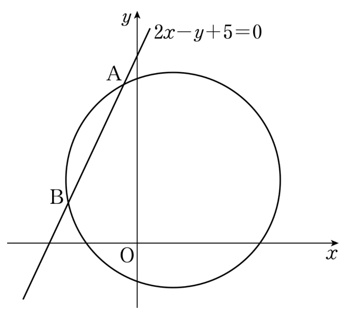
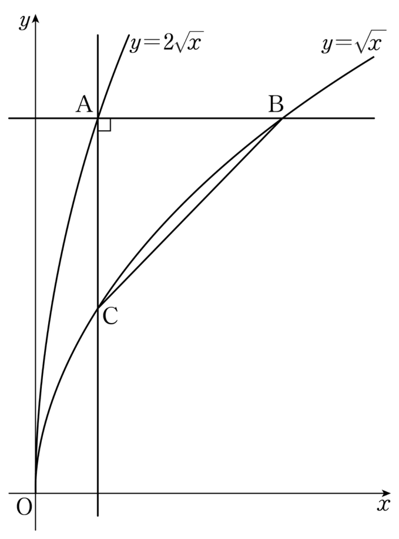
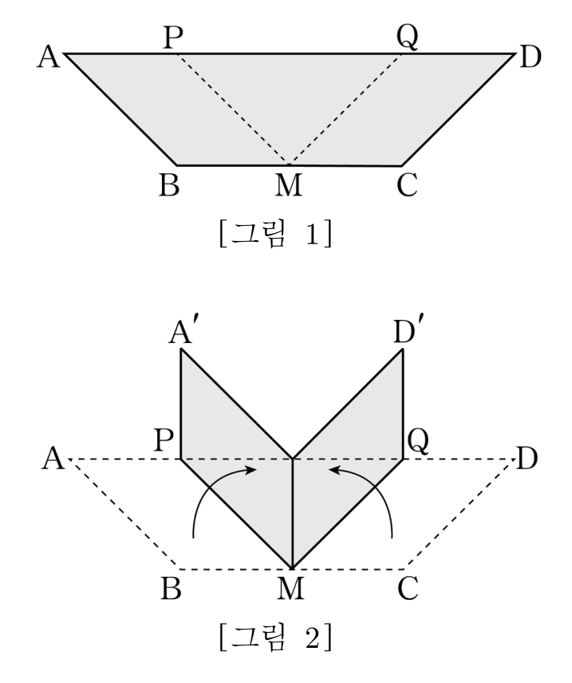

원본 (내부용)좌표평면 위의 두 점 $\mathrm{O}(0,0)$, $\mathrm{A}(6,6)$에 대하여 선분 $\mathrm{OA}$를 $2:1$로 내분하는 점의 $x$좌표는? [3점]
① $1$② $2$③ $3$④ $4$⑤ $5$
원본 정답 ④
원본 풀이 (내부용)[출제의도] 선분의 내분점을 계산한다.
두 점 \(O(0,0),\ A(6,6)\)을 \(2:1\)로 내분하는 점의 \(x\)좌표는
\(
\frac{2\times6+1\times0}{2+1}=4
\)
생성기 숫자판 1/6 · G2H-05#0좌표평면 위의 두 점 $\mathrm{A}\left(0,\ -2\right)$, $\mathrm{B}\left(4,\ 1\right)$에 대하여 선분 $\mathrm{AB}$를 $1:3$으로 내분하는 점의 $x$좌표로 옳은 것을 고르세요.
생성기 숫자판 2/6 · G2H-05#0좌표평면 위의 두 점 $\mathrm{A}\left(1,\ -3\right)$, $\mathrm{B}\left(7,\ 2\right)$에 대하여 선분 $\mathrm{AB}$를 $2:1$로 내분하는 점의 $x$좌표로 옳은 것을 고르세요.
생성기 숫자판 3/6 · G2H-05#0좌표평면 위의 두 점 $\mathrm{A}\left(-4,\ -4\right)$, $\mathrm{B}\left(8,\ 3\right)$에 대하여 선분 $\mathrm{AB}$를 $2:1$로 내분하는 점의 $x$좌표로 옳은 것을 고르세요.
생성기 숫자판 4/6 · G2H-05#0좌표평면 위의 두 점 $\mathrm{A}\left(-3,\ 0\right)$, $\mathrm{B}\left(5,\ 1\right)$에 대하여 선분 $\mathrm{AB}$를 $1:3$으로 내분하는 점의 $x$좌표로 옳은 것을 고르세요.
생성기 숫자판 5/6 · G2H-05#0좌표평면 위의 두 점 $\mathrm{A}\left(0,\ -1\right)$, $\mathrm{B}\left(3,\ 7\right)$에 대하여 선분 $\mathrm{AB}$를 $1:2$로 내분하는 점의 $x$좌표로 옳은 것을 고르세요.
생성기 숫자판 6/6 · G2H-05#0좌표평면 위의 두 점 $\mathrm{A}\left(1,\ 0\right)$, $\mathrm{B}\left(-2,\ 4\right)$에 대하여 선분 $\mathrm{AB}$를 $2:1$로 내분하는 점의 $x$좌표로 옳은 것을 고르세요.
7. 2018년 3월 나형 7번 · 3점 · 고1 범위 · 항등식과 나머지정리·인수분해 · G2H-01#3
원본 (내부용)다항식 $P(x)$를 $x^{2} -1$로 나눈 몫은 $2x+1$이고 나머지가 $5$일 때, 다항식 $P(x)$를 $x-2$로 나눈 나머지는? [3점]
① $15$② $20$③ $25$④ $30$⑤ $35$
원본 정답 ②
원본 풀이 (내부용)[출제의도] 나머지정리를 이용하여 나머지를 구한다.
다항식 \(P(x)\)를 \(x^2-1\)로 나눈 몫이 \(2x+1\)이고 나머지는 5이므로
\(
P(x)=(x^2-1)(2x+1)+5
\)
\(P(x)\)를 \(x-2\)로 나눈 나머지는 \(P(2)\)이므로
\(
\begin{aligned}
P(2)&=(2^2-1)(2\times2+1)+5\\
&=3\times5+5\\
&=20
\end{aligned}
\)
생성기 숫자판 1/6 · G2H-01#3다항식 $P\left(x\right)$를 $x^{2}-4$로 나눈 몫이 $x+1$이고 나머지가 $6$일 때, $P\left(x\right)$를 $x-3$으로 나눈 나머지로 옳은 것을 고르세요.
① $24$② $25$③ $26$④ $27$⑤ $28$
정답③ $26$ $P\left(x\right)=\left(x^{2}-4\right)\left(x+1\right)+6$ 나머지정리에 의하여 구하는 나머지는 $P\left(3\right)=\left(9-4\right)\times 4+6=26$
숫자: 원본 1 2 1 5 2 → 쌍둥이 4 1 6 3 · 같은 수: 1
생성기 숫자판 2/6 · G2H-01#3다항식 $P\left(x\right)$를 $x^{2}-1$로 나눈 몫이 $x+3$이고 나머지가 $5$일 때, $P\left(x\right)$를 $x+2$로 나눈 나머지로 옳은 것을 고르세요.
① $6$② $7$③ $8$④ $9$⑤ $10$
정답③ $8$ $P\left(x\right)=\left(x^{2}-1\right)\left(x+3\right)+5$ 나머지정리에 의하여 구하는 나머지는 $P\left(-2\right)=\left(4-1\right)\times 1+5=8$
숫자: 원본 1 2 1 5 2 → 쌍둥이 1 3 5 2 · 같은 수: 1 2 5
생성기 숫자판 3/6 · G2H-01#3다항식 $P\left(x\right)$를 $x^{2}-4$로 나눈 몫이 $3x-1$이고 나머지가 $8$일 때, $P\left(x\right)$를 $x$로 나눈 나머지로 옳은 것을 고르세요.
① $9$② $10$③ $11$④ $12$⑤ $13$
정답④ $12$ $P\left(x\right)=\left(x^{2}-4\right)\left(3x-1\right)+8$ 나머지정리에 의하여 구하는 나머지는 $P\left(0\right)=\left(0-4\right)\times \left(-1\right)+8=12$
숫자: 원본 1 2 1 5 2 → 쌍둥이 4 3 1 8 · 같은 수: 1
생성기 숫자판 4/6 · G2H-01#3다항식 $P\left(x\right)$를 $x^{2}-4$로 나눈 몫이 $x$이고 나머지가 $8$일 때, $P\left(x\right)$를 $x+3$으로 나눈 나머지로 옳은 것을 고르세요.
① $-11$② $-10$③ $-9$④ $-8$⑤ $-7$
정답⑤ $-7$ $P\left(x\right)=\left(x^{2}-4\right)\left(x\right)+8$ 나머지정리에 의하여 구하는 나머지는 $P\left(-3\right)=\left(9-4\right)\times \left(-3\right)+8=-7$
숫자: 원본 1 2 1 5 2 → 쌍둥이 4 8 3
생성기 숫자판 5/6 · G2H-01#3다항식 $P\left(x\right)$를 $x^{2}-1$로 나눈 몫이 $2x+1$이고 나머지가 $8$일 때, $P\left(x\right)$를 $x+2$로 나눈 나머지로 옳은 것을 고르세요.
① $-3$② $-2$③ $-1$④ $0$⑤ $1$
정답③ $-1$ $P\left(x\right)=\left(x^{2}-1\right)\left(2x+1\right)+8$ 나머지정리에 의하여 구하는 나머지는 $P\left(-2\right)=\left(4-1\right)\times \left(-3\right)+8=-1$
숫자: 원본 1 2 1 5 2 → 쌍둥이 1 2 1 8 2 · 같은 수: 1 2
생성기 숫자판 6/6 · G2H-01#3다항식 $P\left(x\right)$를 $x^{2}-4$로 나눈 몫이 $2x$이고 나머지가 $6$일 때, $P\left(x\right)$를 $x-3$으로 나눈 나머지로 옳은 것을 고르세요.
① $34$② $35$③ $36$④ $37$⑤ $38$
정답③ $36$ $P\left(x\right)=\left(x^{2}-4\right)\left(2x\right)+6$ 나머지정리에 의하여 구하는 나머지는 $P\left(3\right)=\left(9-4\right)\times 6+6=36$
숫자: 원본 1 2 1 5 2 → 쌍둥이 4 2 6 3 · 같은 수: 2
8. 2018년 3월 나형 8번 · 3점 · 고1 범위 · 도형의 이동 · G2H-04b#5
원본 (내부용)함수 $y= \sqrt{2x}$의 그래프를 $x$축의 방향으로 $1$만큼, $y$축의 방향으로 $3$만큼 평행이동한 그래프가 점 $(9,a)$를 지날 때, $a$의 값은? [3점]
① $5$② $6$③ $7$④ $8$⑤ $9$
원본 정답 ③
원본 풀이 (내부용)[출제의도] 무리함수의 그래프의 평행이동을 이해하여 상수의 값을 구한다.
함수 \(y=\sqrt{2x}\)의 그래프를 \(x\)축의 양의 방향으로 1만큼, \(y\)축의 방향으로 3만큼 평행이동하면
\(
y=\sqrt{2(x-1)}+3
\)
함수 \(y=\sqrt{2(x-1)}+3\)의 그래프가 점 \((9,a)\)를 지나므로
\(
\begin{aligned}
a&=\sqrt{2(9-1)}+3\\
&=4+3=7
\end{aligned}
\)
생성기 숫자판 1/6 · G2H-04b#5함수 $y=\sqrt{2x}$의 그래프를 $x$축의 방향으로 $4$만큼, $y$축의 방향으로 $-2$만큼 평행이동한 그래프가 점 $\left(12,\ a\right)$를 지날 때, $a$의 값으로 옳은 것을 고르세요.
① $2$② $3$③ $4$④ $5$⑤ $6$
정답① $2$ 평행이동한 그래프의 식은 $y=\sqrt{2\left(x-4\right)}-2$ $x=12$를 대입하면 $a=\sqrt{2\times 8}-2=4-2=2$
숫자: 원본 2 1 3 9 → 쌍둥이 2 4 2 12 · 같은 수: 2
생성기 숫자판 2/6 · G2H-04b#5함수 $y=\sqrt{3x}$의 그래프를 $x$축의 방향으로 $-3$만큼, $y$축의 방향으로 $-1$만큼 평행이동한 그래프가 점 $\left(24,\ a\right)$를 지날 때, $a$의 값으로 옳은 것을 고르세요.
① $6$② $7$③ $8$④ $9$⑤ $10$
정답③ $8$ 평행이동한 그래프의 식은 $y=\sqrt{3\left(x+3\right)}-1$ $x=24$를 대입하면 $a=\sqrt{3\times 27}-1=9-1=8$
숫자: 원본 2 1 3 9 → 쌍둥이 3 3 1 24 · 같은 수: 1 3
생성기 숫자판 3/6 · G2H-04b#5함수 $y=\sqrt{3x}$의 그래프를 $x$축의 방향으로 $4$만큼, $y$축의 방향으로 $4$만큼 평행이동한 그래프가 점 $\left(7,\ a\right)$를 지날 때, $a$의 값으로 옳은 것을 고르세요.
① $7$② $8$③ $9$④ $10$⑤ $11$
정답① $7$ 평행이동한 그래프의 식은 $y=\sqrt{3\left(x-4\right)}+4$ $x=7$을 대입하면 $a=\sqrt{3\times 3}+4=3+4=7$
숫자: 원본 2 1 3 9 → 쌍둥이 3 4 4 7 · 같은 수: 3
생성기 숫자판 4/6 · G2H-04b#5함수 $y=\sqrt{2x}$의 그래프를 $x$축의 방향으로 $-2$만큼, $y$축의 방향으로 $5$만큼 평행이동한 그래프가 점 $\left(6,\ a\right)$를 지날 때, $a$의 값으로 옳은 것을 고르세요.
① $6$② $7$③ $8$④ $9$⑤ $10$
정답④ $9$ 평행이동한 그래프의 식은 $y=\sqrt{2\left(x+2\right)}+5$ $x=6$을 대입하면 $a=\sqrt{2\times 8}+5=4+5=9$
숫자: 원본 2 1 3 9 → 쌍둥이 2 2 5 6 · 같은 수: 2
생성기 숫자판 5/6 · G2H-04b#5함수 $y=\sqrt{3x}$의 그래프를 $x$축의 방향으로 $4$만큼, $y$축의 방향으로 $1$만큼 평행이동한 그래프가 점 $\left(7,\ a\right)$를 지날 때, $a$의 값으로 옳은 것을 고르세요.
① $4$② $5$③ $6$④ $7$⑤ $8$
정답① $4$ 평행이동한 그래프의 식은 $y=\sqrt{3\left(x-4\right)}+1$ $x=7$을 대입하면 $a=\sqrt{3\times 3}+1=3+1=4$
숫자: 원본 2 1 3 9 → 쌍둥이 3 4 1 7 · 같은 수: 1 3
생성기 숫자판 6/6 · G2H-04b#5함수 $y=\sqrt{2x}$의 그래프를 $x$축의 방향으로 $1$만큼, $y$축의 방향으로 $1$만큼 평행이동한 그래프가 점 $\left(19,\ a\right)$를 지날 때, $a$의 값으로 옳은 것을 고르세요.
① $3$② $4$③ $5$④ $6$⑤ $7$
정답⑤ $7$ 평행이동한 그래프의 식은 $y=\sqrt{2\left(x-1\right)}+1$ $x=19$를 대입하면 $a=\sqrt{2\times 18}+1=6+1=7$
숫자: 원본 2 1 3 9 → 쌍둥이 2 1 1 19 · 같은 수: 1 2
9. 2018년 3월 나형 9번 · 3점 · 고1 범위 · 이차방정식과 이차함수 · G2H-02b#5
원본 (내부용)$0 \le x \le 4$에서 정의된 이차함수 $f(x)=x^2 -6x +k$의 최댓값이 $17$일 때, 이차함수 $f(x)$의 최솟값은? (단, $k$는 상수이다.) [3점]
① $4$② $5$③ $6$④ $7$⑤ $8$
원본 정답 ⑤
원본 풀이 (내부용)[출제의도] 이차함수의 그래프의 대칭성을 이용하여 이차함수의 최솟값을 구한다.
\(
f(x)=x^2-6x+k
\)
\(
=(x-3)^2+k-9
\)
이므로 \(0\leq x\leq4\)에서 이차함수 \(f(x)\)의 그래프는 그림과 같다.
그림의 포물선은 \(x=3\)에서 최솟값 \(k-9\)를 갖고, \(x=0\)에서 최댓값 \(k\)를 갖는다.
이차함수 \(f(x)\)의 최댓값이 17이므로
\(
k=17
\)
따라서 이차함수 \(f(x)\)의 최솟값은
\(
k-9=17-9=8
\)
생성기 숫자판 1/6 · G2H-02b#5$1\le x\le 5$에서 정의된 이차함수 $f\left(x\right)=x^{2}-4x+k$의 최댓값이 $7$일 때, 이차함수 $f\left(x\right)$의 최솟값으로 옳은 것을 고르세요. (단, $k$는 상수입니다.)
① $-6$② $-5$③ $-4$④ $-3$⑤ $-2$
정답⑤ $-2$ $f\left(x\right)=\left(x-2\right)^{2}+k-4$ $1\le x\le 5$에서 꼭짓점의 $x$좌표 $2$와 더 먼 끝 $x=5$에서 최댓값을 가지므로 $f\left(5\right)=7$ $5+k=7$에서 $k=2$ 최솟값은 $f\left(2\right)=-2$
숫자: 원본 0 4 6 17 → 쌍둥이 1 5 4 7 · 같은 수: 4
생성기 숫자판 2/6 · G2H-02b#5$-1\le x\le 5$에서 정의된 이차함수 $f\left(x\right)=x^{2}-6x+k$의 최댓값이 $14$일 때, 이차함수 $f\left(x\right)$의 최솟값으로 옳은 것을 고르세요. (단, $k$는 상수입니다.)
① $-6$② $-5$③ $-4$④ $-3$⑤ $-2$
정답⑤ $-2$ $f\left(x\right)=\left(x-3\right)^{2}+k-9$ $-1\le x\le 5$에서 꼭짓점의 $x$좌표 $3$과 더 먼 끝 $x=-1$에서 최댓값을 가지므로 $f\left(-1\right)=14$ $7+k=14$에서 $k=7$ 최솟값은 $f\left(3\right)=-2$
숫자: 원본 0 4 6 17 → 쌍둥이 1 5 6 14 · 같은 수: 6
생성기 숫자판 3/6 · G2H-02b#5$0\le x\le 4$에서 정의된 이차함수 $f\left(x\right)=x^{2}-2x+k$의 최댓값이 $9$일 때, 이차함수 $f\left(x\right)$의 최솟값으로 옳은 것을 고르세요. (단, $k$는 상수입니다.)
① $-2$② $-1$③ $0$④ $1$⑤ $2$
정답③ $0$ $f\left(x\right)=\left(x-1\right)^{2}+k-1$ $0\le x\le 4$에서 꼭짓점의 $x$좌표 $1$과 더 먼 끝 $x=4$에서 최댓값을 가지므로 $f\left(4\right)=9$ $8+k=9$에서 $k=1$ 최솟값은 $f\left(1\right)=0$
숫자: 원본 0 4 6 17 → 쌍둥이 0 4 2 9 · 같은 수: 0 4
생성기 숫자판 4/6 · G2H-02b#5$1\le x\le 6$에서 정의된 이차함수 $f\left(x\right)=x^{2}-8x+k$의 최댓값이 $-7$일 때, 이차함수 $f\left(x\right)$의 최솟값으로 옳은 것을 고르세요. (단, $k$는 상수입니다.)
① $-20$② $-19$③ $-18$④ $-17$⑤ $-16$
정답⑤ $-16$ $f\left(x\right)=\left(x-4\right)^{2}+k-16$ $1\le x\le 6$에서 꼭짓점의 $x$좌표 $4$와 더 먼 끝 $x=1$에서 최댓값을 가지므로 $f\left(1\right)=-7$ $-7+k=-7$에서 $k=0$ 최솟값은 $f\left(4\right)=-16$
숫자: 원본 0 4 6 17 → 쌍둥이 1 6 8 7 · 같은 수: 6
생성기 숫자판 5/6 · G2H-02b#5$2\le x\le 8$에서 정의된 이차함수 $f\left(x\right)=x^{2}-8x+k$의 최댓값이 $5$일 때, 이차함수 $f\left(x\right)$의 최솟값으로 옳은 것을 고르세요. (단, $k$는 상수입니다.)
① $-13$② $-12$③ $-11$④ $-10$⑤ $-9$
정답③ $-11$ $f\left(x\right)=\left(x-4\right)^{2}+k-16$ $2\le x\le 8$에서 꼭짓점의 $x$좌표 $4$와 더 먼 끝 $x=8$에서 최댓값을 가지므로 $f\left(8\right)=5$ $k=5$ 최솟값은 $f\left(4\right)=-11$
숫자: 원본 0 4 6 17 → 쌍둥이 2 8 8 5
생성기 숫자판 6/6 · G2H-02b#5$2\le x\le 6$에서 정의된 이차함수 $f\left(x\right)=x^{2}-6x+k$의 최댓값이 $8$일 때, 이차함수 $f\left(x\right)$의 최솟값으로 옳은 것을 고르세요. (단, $k$는 상수입니다.)
① $-1$② $0$③ $1$④ $2$⑤ $3$
정답① $-1$ $f\left(x\right)=\left(x-3\right)^{2}+k-9$ $2\le x\le 6$에서 꼭짓점의 $x$좌표 $3$과 더 먼 끝 $x=6$에서 최댓값을 가지므로 $f\left(6\right)=8$ $k=8$ 최솟값은 $f\left(3\right)=-1$
숫자: 원본 0 4 6 17 → 쌍둥이 2 6 6 8 · 같은 수: 6
10. 2018년 3월 나형 10번 · 3점 · 고1 범위 · 여러 가지 방정식과 부등식 · G2H-02#11
원본 (내부용)연립방정식 $\begin{cases} 3x-y=0 \\ & x^2 +y^2 =90\end{cases}$ 의 해를 $x=a$, $y=b$라 할 때, 두 수 $a$, $b$의 곱 $ab$의 값은? [3점]
① $24$② $27$③ $30$④ $33$⑤ $36$
원본 정답 ②
원본 풀이 (내부용)[출제의도] 연립방정식의 해를 구한다.
연립방정식
\(
\begin{cases}
3x-y=0 \quad\cdots\text{㉠}\\
x^2+y^2=90 \quad\cdots\text{㉡}
\end{cases}
\)
㉠에서 \(3x-y=0\)이므로
\(
y=3x \quad\cdots\text{㉢}
\)
㉢을 ㉡에 대입하면
\(
\begin{aligned}
x^2+(3x)^2&=90\\
10x^2&=90\\
x^2&=9\\
x&=\pm3
\end{aligned}
\)
따라서 연립방정식의 해는
\(
x=3,\ y=9 \quad\text{또는}\quad x=-3,\ y=-9
\)
이므로
\(
a=3,\ b=9\text{일 때}\quad ab=3\times9=27
\)
\(
a=-3,\ b=-9\text{일 때}\quad ab=(-3)\times(-9)=27
\)
두 경우 모두 \(ab=27\).
생성기 숫자판 1/6 · G2H-02#11연립방정식 $\begin{cases}3x-y=3\\9x^{2}+1x-y^{2}=48\end{cases}$의 해를 $x=a$, $y=b$라 할 때, $ab$의 값으로 옳은 것을 고르세요.
① $-18$② $15$③ $16$④ $17$⑤ $18$
정답⑤ $18$ $y=3x-3$을 둘째 식에 대입하면 $9x^{2}+1x-\left(3x-3\right)^{2}=48$ $19x-9=48$이므로 $x=3$, $y=6$ 따라서 $ab=18$
숫자: 원본 3 0 90 → 쌍둥이 3 3 9 1 48 · 같은 수: 3
생성기 숫자판 2/6 · G2H-02#11연립방정식 $\begin{cases}x-2y=3\\x^{2}-4y^{2}=33\end{cases}$의 해를 $x=a$, $y=b$라 할 때, $a+b$의 값으로 옳은 것을 고르세요.
① $-9$② $6$③ $7$④ $8$⑤ $9$
정답⑤ $9$ $x^{2}-4y^{2}=\left(x-2y\right)\left(x+2y\right)=33$이고 $x-2y=3$이므로 $x+2y=11$ 두 식을 연립하면 $x=7$, $y=2$ 따라서 $a+b=9$
숫자: 원본 3 0 90 → 쌍둥이 2 3 4 33 · 같은 수: 3
생성기 숫자판 3/6 · G2H-02#11연립방정식 $\begin{cases}2x-y=3\\4x^{2}+1x-y^{2}=4\end{cases}$의 해를 $x=a$, $y=b$라 할 때, $ab$의 값으로 옳은 것을 고르세요.
① $-1$② $0$③ $1$④ $2$⑤ $3$
정답① $-1$ $y=2x-3$을 둘째 식에 대입하면 $4x^{2}+1x-\left(2x-3\right)^{2}=4$ $13x-9=4$이므로 $x=1$, $y=-1$ 따라서 $ab=-1$
숫자: 원본 3 0 90 → 쌍둥이 2 3 4 1 4 · 같은 수: 3
생성기 숫자판 4/6 · G2H-02#11연립방정식 $\begin{cases}2x-y=3\\4x^{2}+1x-y^{2}=17\end{cases}$의 해를 $x=a$, $y=b$라 할 때, $ab$의 값으로 옳은 것을 고르세요.
① $0$② $1$③ $2$④ $3$⑤ $4$
정답③ $2$ $y=2x-3$을 둘째 식에 대입하면 $4x^{2}+1x-\left(2x-3\right)^{2}=17$ $13x-9=17$이므로 $x=2$, $y=1$ 따라서 $ab=2$
숫자: 원본 3 0 90 → 쌍둥이 2 3 4 1 17 · 같은 수: 3
생성기 숫자판 5/6 · G2H-02#11연립방정식 $\begin{cases}3x-y=3\\9x^{2}-3x-y^{2}=36\end{cases}$의 해를 $x=a$, $y=b$라 할 때, $ab$의 값으로 옳은 것을 고르세요.
① $-18$② $16$③ $17$④ $18$⑤ $19$
정답④ $18$ $y=3x-3$을 둘째 식에 대입하면 $9x^{2}-3x-\left(3x-3\right)^{2}=36$ $15x-9=36$이므로 $x=3$, $y=6$ 따라서 $ab=18$
숫자: 원본 3 0 90 → 쌍둥이 3 3 9 3 36 · 같은 수: 3
생성기 숫자판 6/6 · G2H-02#11연립방정식 $\begin{cases}x-3y=3\\x^{2}-9y^{2}=27\end{cases}$의 해를 $x=a$, $y=b$라 할 때, $a+b$의 값으로 옳은 것을 고르세요.
① $6$② $7$③ $8$④ $9$⑤ $10$
정답② $7$ $x^{2}-9y^{2}=\left(x-3y\right)\left(x+3y\right)=27$이고 $x-3y=3$이므로 $x+3y=9$ 두 식을 연립하면 $x=6$, $y=1$ 따라서 $a+b=7$
숫자: 원본 3 0 90 → 쌍둥이 3 3 9 27 · 같은 수: 3
11. 2018년 3월 나형 11번 · 3점 · 수학Ⅰ 지수·로그 · G2H-03b#5
원본 (내부용)실수 $x$에 대한 두 조건 $p$: $|x-a | \le 1$, $q$: $x^2 -2x-8>0$ 에 대하여 $p \to \sim q$가 참이 되도록 하는 실수 $a$의 최댓값은? [3점]
① $1$② $2$③ $3$④ $4$⑤ $5$
원본 정답 ③
원본 풀이 (내부용)[출제의도] 조건의 진리집합 사이의 관계를 이해하여 미지수의 최댓값을 구한다.
조건 \(p:|x-a|\leq1\)의 진리집합은
\(
P=\{x\mid a-1\leq x\leq a+1\}
\)
조건 \(q:x^2-2x-8>0\)에 대하여 조건 \(\sim q\)는
\(
x^2-2x-8\leq0
\)
이므로 조건 \(\sim q\)의 진리집합은
\(
Q^c=\{x\mid x^2-2x-8\leq0\}
=\{x\mid -2\leq x\leq4\}
\)
따라서 \(p\to\sim q\)가 참이 되려면
\(
P\subset Q^c
\)
이어야 하므로
\(
-2\leq a-1,\qquad a+1\leq4
\)
\(
-1\leq a,\qquad a\leq3
\)
\(
-1\leq a\leq3
\)
따라서 실수 \(a\)의 최댓값은 3.
생성기 숫자판 1/6 · G2H-03b#5실수 $x$에 대한 두 조건 $p$: $\left|x-a\right|\le 1$, $q$: $x^{2}-4x-12>0$에 대하여 $p\longrightarrow\sim q$가 참이 되도록 하는 실수 $a$의 최댓값으로 옳은 것을 고르세요.
생성기 숫자판 2/6 · G2H-03b#5실수 $x$에 대한 두 조건 $p$: $\left|x-a\right|\le 2$, $q$: $x^{2}-x-20>0$에 대하여 $p\longrightarrow\sim q$가 참이 되도록 하는 실수 $a$의 최댓값으로 옳은 것을 고르세요.
생성기 숫자판 3/6 · G2H-03b#5실수 $x$에 대한 두 조건 $p$: $\left|x-a\right|\le 2$, $q$: $x^{2}-4x-21>0$에 대하여 $p\longrightarrow\sim q$가 참이 되도록 하는 실수 $a$의 최댓값으로 옳은 것을 고르세요.
생성기 숫자판 4/6 · G2H-03b#5실수 $x$에 대한 두 조건 $p$: $\left|x-a\right|\le 3$, $q$: $x^{2}-3x-10>0$에 대하여 $p\longrightarrow\sim q$가 참이 되도록 하는 실수 $a$의 최댓값으로 옳은 것을 고르세요.
생성기 숫자판 5/6 · G2H-03b#5실수 $x$에 대한 두 조건 $p$: $\left|x-a\right|\le 3$, $q$: $x^{2}-3x-28>0$에 대하여 $p\longrightarrow\sim q$가 참이 되도록 하는 실수 $a$의 최댓값으로 옳은 것을 고르세요.
생성기 숫자판 6/6 · G2H-03b#5실수 $x$에 대한 두 조건 $p$: $\left|x-a\right|\le 2$, $q$: $x^{2}-4x-5>0$에 대하여 $p\longrightarrow\sim q$가 참이 되도록 하는 실수 $a$의 최댓값으로 옳은 것을 고르세요.
12. 2018년 3월 나형 12번 · 3점 · 고1 범위 · 원의 방정식 · G2M10-01#5
원본 (내부용)그림과 같이 좌표평면에서 원 $x^2 +y^2 -2x-4y+k=0$과 직선 $2x -y+5=0$이 두 점 $\mathrm{A}$, $\mathrm{B}$에서 만난다. $\overline{ \mathrm{AB}} =4$일 때, 상수 $k$의 값은? [3점]

① $-4$② $-3$③ $-2$④ $-1$⑤ $0$
원본 정답 ①
원본 풀이 (내부용)[출제의도] 피타고라스정리와 원과 직선 사이의 관계를 이용하여 문제를 해결한다.
원 \(x^2+y^2-2x-4y+k=0\)의 방정식을 변형하면
\(
(x-1)^2+(y-2)^2=5-k
\)
원의 중심을 \(C\), 반지름을 \(r\)이라 하면 중심은 \(C(1,2)\)이고
\(
r^2=5-k
\)
이다.
그림과 같이 점 \(C\)에서 선분 \(AB\)에 내린 수선의 발을 \(H\)라 하면
\(
\overline{AB}=4\text{이므로}\quad
\overline{AH}=\overline{BH}=2
\)
점 \(C(1,2)\)와 직선 \(2x-y+5=0\) 사이의 거리는
\(
\overline{CH}
=\frac{|2\times1-2+5|}{\sqrt{2^2+(-1)^2}}
=\frac5{\sqrt5}
=\sqrt5
\)
직각삼각형 \(CAH\)에서
\(
\begin{aligned}
r^2&=(\sqrt5)^2+2^2\\
&=5+4\\
&=9
\end{aligned}
\)
\(
r^2=5-k\text{이므로 }9=5-k
\)
\(
k=-4
\)
생성기 숫자판 1/6 · G2M10-01#5좌표평면에서 원 $x^{2}+y^{2}-6x-6y+k=0$과 직선 $3x-y+4=0$이 두 점 $\mathrm{A}$, $\mathrm{B}$에서 만납니다. $\overline{\mathrm{AB}}=6$일 때, 상수 $k$의 값으로 옳은 것을 고르세요.
① $-4$② $-3$③ $-2$④ $-1$⑤ $0$
정답④ $-1$ $\left(x-3\right)^{2}+\left(y-3\right)^{2}=18-k$이므로 원의 중심은 $\left(3,\ 3\right)$, 반지름의 길이의 제곱은 $18-k$ 원의 중심과 직선 $3x-y+4=0$ 사이의 거리는 $\frac{\left|3\times 3-3+4\right|}{\sqrt{10}}=\sqrt{10}$ $\overline{\mathrm{AB}}=6$이므로 $\left(\sqrt{10}\right)^{2}+3^{2}=18-k$ $19=18-k$이므로 $k=-1$
생성기 숫자판 2/6 · G2M10-01#5좌표평면에서 원 $x^{2}+y^{2}-2x-2y+k=0$과 직선 $2x-y-6=0$이 두 점 $\mathrm{A}$, $\mathrm{B}$에서 만납니다. $\overline{\mathrm{AB}}=2$일 때, 상수 $k$의 값으로 옳은 것을 고르세요.
① $-4$② $-3$③ $-2$④ $-1$⑤ $0$
정답① $-4$ $\left(x-1\right)^{2}+\left(y-1\right)^{2}=2-k$이므로 원의 중심은 $\left(1,\ 1\right)$, 반지름의 길이의 제곱은 $2-k$ 원의 중심과 직선 $2x-y-6=0$ 사이의 거리는 $\frac{\left|2\times 1-1-6\right|}{\sqrt{5}}=\sqrt{5}$ $\overline{\mathrm{AB}}=2$이므로 $\left(\sqrt{5}\right)^{2}+1^{2}=2-k$ $6=2-k$이므로 $k=-4$
생성기 숫자판 3/6 · G2M10-01#5좌표평면에서 원 $x^{2}+y^{2}-6x+4y+k=0$과 직선 $2x-y+2=0$이 두 점 $\mathrm{A}$, $\mathrm{B}$에서 만납니다. $\overline{\mathrm{AB}}=4$일 때, 상수 $k$의 값으로 옳은 것을 고르세요.
① $-12$② $-11$③ $-10$④ $-9$⑤ $-8$
정답② $-11$ $\left(x-3\right)^{2}+\left(y+2\right)^{2}=13-k$이므로 원의 중심은 $\left(3,\ -2\right)$, 반지름의 길이의 제곱은 $13-k$ 원의 중심과 직선 $2x-y+2=0$ 사이의 거리는 $\frac{\left|2\times 3-\left(-2\right)+2\right|}{\sqrt{5}}=2\sqrt{5}$ $\overline{\mathrm{AB}}=4$이므로 $\left(2\sqrt{5}\right)^{2}+2^{2}=13-k$ $24=13-k$이므로 $k=-11$
생성기 숫자판 4/6 · G2M10-01#5좌표평면에서 원 $x^{2}+y^{2}-6x+2y+k=0$과 직선 $2x-y-2=0$이 두 점 $\mathrm{A}$, $\mathrm{B}$에서 만납니다. $\overline{\mathrm{AB}}=2$일 때, 상수 $k$의 값으로 옳은 것을 고르세요.
① $1$② $2$③ $3$④ $4$⑤ $5$
정답④ $4$ $\left(x-3\right)^{2}+\left(y+1\right)^{2}=10-k$이므로 원의 중심은 $\left(3,\ -1\right)$, 반지름의 길이의 제곱은 $10-k$ 원의 중심과 직선 $2x-y-2=0$ 사이의 거리는 $\frac{\left|2\times 3-\left(-1\right)-2\right|}{\sqrt{5}}=\sqrt{5}$ $\overline{\mathrm{AB}}=2$이므로 $\left(\sqrt{5}\right)^{2}+1^{2}=10-k$ $6=10-k$이므로 $k=4$
생성기 숫자판 5/6 · G2M10-01#5좌표평면에서 원 $x^{2}+y^{2}-4x-6y+k=0$과 직선 $2x-y+4=0$이 두 점 $\mathrm{A}$, $\mathrm{B}$에서 만납니다. $\overline{\mathrm{AB}}=4$일 때, 상수 $k$의 값으로 옳은 것을 고르세요.
① $2$② $3$③ $4$④ $5$⑤ $6$
정답③ $4$ $\left(x-2\right)^{2}+\left(y-3\right)^{2}=13-k$이므로 원의 중심은 $\left(2,\ 3\right)$, 반지름의 길이의 제곱은 $13-k$ 원의 중심과 직선 $2x-y+4=0$ 사이의 거리는 $\frac{\left|2\times 2-3+4\right|}{\sqrt{5}}=\sqrt{5}$ $\overline{\mathrm{AB}}=4$이므로 $\left(\sqrt{5}\right)^{2}+2^{2}=13-k$ $9=13-k$이므로 $k=4$
생성기 숫자판 6/6 · G2M10-01#5좌표평면에서 원 $x^{2}+y^{2}-2x-2y+k=0$과 직선 $2x-y+4=0$이 두 점 $\mathrm{A}$, $\mathrm{B}$에서 만납니다. $\overline{\mathrm{AB}}=2$일 때, 상수 $k$의 값으로 옳은 것을 고르세요.
① $-6$② $-5$③ $-4$④ $-3$⑤ $-2$
정답③ $-4$ $\left(x-1\right)^{2}+\left(y-1\right)^{2}=2-k$이므로 원의 중심은 $\left(1,\ 1\right)$, 반지름의 길이의 제곱은 $2-k$ 원의 중심과 직선 $2x-y+4=0$ 사이의 거리는 $\frac{\left|2\times 1-1+4\right|}{\sqrt{5}}=\sqrt{5}$ $\overline{\mathrm{AB}}=2$이므로 $\left(\sqrt{5}\right)^{2}+1^{2}=2-k$ $6=2-k$이므로 $k=-4$
원본 (내부용)2018 평창 동계 올림픽 대회 및 동계 패럴림픽 대회 자원봉사 포털 사이트에 접속한 사람 중에서 $100$명을 대상으로 자원봉사 활동 신청 여부를 조사하였다. 그 결과 동계 올림픽 대회의 자원봉사 활동을 신청한 사람이 $51$명, 동계 패럴림픽 대회의 자원봉사 활동을 신청한 사람이 $42$명, 두 대회의 자원봉사 활동 중 어느 것도 신청하지 않은 사람이 $25$명이다. 두 대회의 자원봉사 활동 중에서 하나만 신청한 사람의 수는? [4점]
① $55$② $57$③ $59$④ $61$⑤ $63$
원본 정답 ②
원본 풀이 (내부용)[출제의도] 실생활의 소재를 활용하여 집합의 원소의 개수를 구한다.
자원봉사 활동 신청 여부를 조사한 100명의 사람의 집합을 전체집합 \(U\), 동계 올림픽 대회의 자원봉사 활동을 신청한 사람의 집합을 \(A\), 동계 패럴림픽 대회의 자원봉사 활동을 신청한 사람의 집합을 \(B\)라 하면
\(
n(U)=100,\quad n(A)=51,\quad n(B)=42,\quad
n(A^c\cap B^c)=25
\)
\(A^c\cap B^c=(A\cup B)^c\)이므로
\(
\begin{aligned}
n(A\cup B)&=n(U)-n(A^c\cap B^c)\\
&=100-25\\
&=75
\end{aligned}
\)
\(
n(A\cup B)=n(A)+n(B)-n(A\cap B)
\)
에서
\(
\begin{aligned}
n(A\cap B)&=51+42-75\\
&=18
\end{aligned}
\)
집합 \(A\) 또는 집합 \(B\)에만 포함된 사람의 수는
\(
n(A\cup B)-n(A\cap B)=75-18=57
\)
---
(14번 해설 이어짐)
따라서 두 대회의 자원봉사 활동 중에서 하나만 신청한 사람의 수는 57.
[다른 풀이]
두 대회의 자원봉사 활동 중에서 하나만 신청한 사람의 집합은
\(
(A-B)\cup(B-A)
\)
\(
n(A-B)=n(A\cup B)-n(B)=75-42=33
\)
\(
n(B-A)=n(A\cup B)-n(A)=75-51=24
\)
두 집합 \(A-B,\ B-A\)는 서로소이므로
\(
\begin{aligned}
n((A-B)\cup(B-A))
&=n(A-B)+n(B-A)\\
&=33+24\\
&=57
\end{aligned}
\)
쌍둥이 1/5 · 4점 쌍둥이어느 모임의 회원 $80$명을 대상으로 두 행사 $\mathrm{A}$, $\mathrm{B}$의 참가 신청 여부를 조사하였더니 행사 $\mathrm{A}$를 신청한 사람이 $40$명, 행사 $\mathrm{B}$를 신청한 사람이 $35$명, 어느 것도 신청하지 않은 사람이 $20$명이었습니다. 두 행사 중 하나만 신청한 사람의 수로 옳은 것을 고르세요.
① $41$② $43$③ $45$④ $47$⑤ $49$
정답③ $45$ $n\left(A\cup B\right)=80-20=60$ $n\left(A\cap B\right)=40+35-60=15$ 하나만 신청한 사람의 수는 $60-15=45$
숫자: 원본 2018 100 51 42 25 → 쌍둥이 80 40 35 20
쌍둥이 2/5 · 4점 쌍둥이어느 모임의 회원 $120$명을 대상으로 두 행사 $\mathrm{A}$, $\mathrm{B}$의 참가 신청 여부를 조사하였더니 행사 $\mathrm{A}$를 신청한 사람이 $70$명, 행사 $\mathrm{B}$를 신청한 사람이 $45$명, 어느 것도 신청하지 않은 사람이 $30$명이었습니다. 두 행사 중 하나만 신청한 사람의 수로 옳은 것을 고르세요.
① $59$② $61$③ $63$④ $65$⑤ $67$
정답④ $65$ $n\left(A\cup B\right)=120-30=90$ $n\left(A\cap B\right)=70+45-90=25$ 하나만 신청한 사람의 수는 $90-25=65$
숫자: 원본 2018 100 51 42 25 → 쌍둥이 120 70 45 30
쌍둥이 3/5 · 4점 쌍둥이어느 모임의 회원 $60$명을 대상으로 두 행사 $\mathrm{A}$, $\mathrm{B}$의 참가 신청 여부를 조사하였더니 행사 $\mathrm{A}$를 신청한 사람이 $33$명, 행사 $\mathrm{B}$를 신청한 사람이 $28$명, 어느 것도 신청하지 않은 사람이 $10$명이었습니다. 두 행사 중 하나만 신청한 사람의 수로 옳은 것을 고르세요.
① $37$② $39$③ $41$④ $43$⑤ $45$
정답② $39$ $n\left(A\cup B\right)=60-10=50$ $n\left(A\cap B\right)=33+28-50=11$ 하나만 신청한 사람의 수는 $50-11=39$
숫자: 원본 2018 100 51 42 25 → 쌍둥이 60 33 28 10
쌍둥이 4/5 · 4점 쌍둥이회원 $110$명을 대상으로 두 행사 $\mathrm{A}$, $\mathrm{B}$의 참가 신청을 조사했더니 $\mathrm{A}$ 신청자는 $48$명, $\mathrm{B}$ 신청자는 $42$명, 어느 행사도 신청하지 않은 회원은 $25$명이었습니다. 두 행사 모두 신청한 회원의 수를 구하세요.
① $1$② $3$③ $5$④ $7$⑤ $9$
정답③ $5$ 적어도 한 행사에 신청한 회원은 $110-25=85$명이다. 포함배제로 두 행사 모두 신청한 회원은 $48+42-85=5$명
숫자: 원본 2018 100 51 42 25 → 쌍둥이 110 48 42 25 · 같은 수: 25 42
쌍둥이 5/5 · 4점 쌍둥이회원 $80$명을 대상으로 두 행사 $\mathrm{A}$, $\mathrm{B}$의 참가 신청을 조사했더니 $\mathrm{A}$ 신청자는 $40$명, $\mathrm{B}$ 신청자는 $35$명, 어느 행사도 신청하지 않은 회원은 $10$명이었습니다. 한 행사만 신청한 회원의 수를 구하세요.
① $61$② $63$③ $65$④ $67$⑤ $69$
정답③ $65$ 적어도 한 행사에 신청한 회원은 $80-10=70$명이다. 한 행사만 신청한 수는 $2\times70-(40+35)=65$명이다.
원본 풀이 (내부용)[출제의도] 유리함수의 그래프와 로그의 성질을 이용하여 문제를 해결한다.
함수 \(y=\dfrac1x\)의 그래프가 점 \((\sqrt[3]{a},\sqrt b)\)를 지나므로
\(
\sqrt b=\frac1{\sqrt[3]a}
\)
\(
b^{\frac12}=\frac1{a^{\frac13}}
\)
\(
b=a^{-\frac23}
\)
\(
\log_a b=\log_a a^{-\frac23}=-\frac23
\)
\(
\log_a b=\frac1{\log_b a}=-\frac32
\)
이므로
\(
\log_a b+\log_b a=-\frac23-\frac32=-\frac{13}{6}
\)
쌍둥이 1/5 · 4점 쌍둥이좌표평면에서 함수 $y=\frac{1}{x}$의 그래프가 점 $\left(\sqrt{a},\ \sqrt[5]{b}\right)$를 지날 때, $\log_{a}b+\log_{b}a$의 값으로 옳은 것을 고르세요. (단, $a$, $b$는 $1$이 아닌 양수입니다.)
① $-\frac{16}{5}$② $-\frac{31}{10}$③ $-3$④ $-\frac{29}{10}$⑤ $-\frac{14}{5}$
정답④ $-\frac{29}{10}$ $\sqrt[5]{b}=\frac{1}{\sqrt{a}}$이므로 $b^{\frac{1}{5}}=a^{-\frac{1}{2}}$, 즉 $b=a^{-\frac{5}{2}}$ $\log_{a}b=-\frac{5}{2}$, $\log_{b}a=\frac{1}{\log_{a}b}=-\frac{2}{5}$ $\log_{a}b+\log_{b}a=-\frac{5}{2}-\frac{2}{5}$ $=-\frac{29}{10}$
숫자: 원본 1 3 1 → 쌍둥이 1 5 1 · 같은 수: 1
쌍둥이 2/5 · 4점 쌍둥이좌표평면에서 함수 $y=\frac{1}{x}$의 그래프가 점 $\left(\sqrt[4]{a},\ \sqrt[3]{b}\right)$를 지날 때, $\log_{a}b+\log_{b}a$의 값으로 옳은 것을 고르세요. (단, $a$, $b$는 $1$이 아닌 양수입니다.)
① $-\frac{9}{4}$② $-\frac{13}{6}$③ $-\frac{25}{12}$④ $-2$⑤ $-\frac{23}{12}$
정답③ $-\frac{25}{12}$ $\sqrt[3]{b}=\frac{1}{\sqrt[4]{a}}$이므로 $b^{\frac{1}{3}}=a^{-\frac{1}{4}}$, 즉 $b=a^{-\frac{3}{4}}$ $\log_{a}b=-\frac{3}{4}$, $\log_{b}a=\frac{1}{\log_{a}b}=-\frac{4}{3}$ $\log_{a}b+\log_{b}a=-\frac{3}{4}-\frac{4}{3}$ $=-\frac{25}{12}$
숫자: 원본 1 3 1 → 쌍둥이 1 4 3 1 · 같은 수: 1 3
쌍둥이 3/5 · 4점 쌍둥이좌표평면에서 함수 $y=\frac{1}{x}$의 그래프가 점 $\left(\sqrt[5]{a},\ \sqrt[3]{b}\right)$를 지날 때, $\log_{a}b+\log_{b}a$의 값으로 옳은 것을 고르세요. (단, $a$, $b$는 $1$이 아닌 양수입니다.)
① $-\frac{7}{3}$② $-\frac{34}{15}$③ $-\frac{11}{5}$④ $-\frac{32}{15}$⑤ $-\frac{31}{15}$
정답② $-\frac{34}{15}$ $\sqrt[3]{b}=\frac{1}{\sqrt[5]{a}}$이므로 $b^{\frac{1}{3}}=a^{-\frac{1}{5}}$, 즉 $b=a^{-\frac{3}{5}}$ $\log_{a}b=-\frac{3}{5}$, $\log_{b}a=\frac{1}{\log_{a}b}=-\frac{5}{3}$ $\log_{a}b+\log_{b}a=-\frac{3}{5}-\frac{5}{3}$ $=-\frac{34}{15}$
숫자: 원본 1 3 1 → 쌍둥이 1 5 3 1 · 같은 수: 1 3
쌍둥이 4/5 · 4점 쌍둥이좌표평면에서 함수 $y=\frac{1}{x}$의 그래프가 점 $\left(\sqrt[3]{a},\ \sqrt{b}\right)$를 지날 때, $\log_{a}b$의 값으로 옳은 것을 고르세요. (단, $a$, $b$는 $1$이 아닌 양수입니다.)
① $-1$② $-\frac{5}{6}$③ $-\frac{2}{3}$④ $-\frac{1}{2}$⑤ $-\frac{1}{3}$
정답③ $-\frac{2}{3}$ $\sqrt{b}=\frac{1}{\sqrt[3]{a}}=a^{-\frac{1}{3}}$이므로 $b=a^{-\frac{2}{3}}$ 따라서 $\log_a b=-\frac{2}{3}$
숫자: 원본 1 3 1 → 쌍둥이 1 3 1 · 같은 수: 1 3
쌍둥이 5/5 · 4점 쌍둥이좌표평면에서 함수 $y=\frac{1}{x}$의 그래프가 점 $\left(\sqrt{a},\ \sqrt[3]{b}\right)$를 지날 때, $\log_{b}a$의 값으로 옳은 것을 고르세요. (단, $a$, $b$는 $1$이 아닌 양수입니다.)
① $-\frac{5}{6}$② $-\frac{3}{4}$③ $-\frac{2}{3}$④ $-\frac{1}{2}$⑤ $-\frac{1}{3}$
17. 2018년 3월 나형 17번 · 4점 · 고1 범위 · 유리함수와 무리함수 · 4점 쌍둥이
원본 (내부용)함수 $y= 2\sqrt{x}$의 그래프 위의 점 $\mathrm{A}$를 지나고 $x$축, $y$축에 각각 평행한 직선이 함수 $y= \sqrt{x}$의 그래프와 만나는 점을 각각 $\mathrm{B}$, $\mathrm{C}$라 하자. 삼각형 $\mathrm{ACB}$가 직각이등변삼각형일 때, 삼각형 $\mathrm{ACB}$의 넓이는? (단, 점 $\mathrm{A}$는 제$1$사분면에 있다.) [4점]

① $\frac{1}{18}$② $\frac{1}{15}$③ $\frac{1}{12}$④ $\frac{1}{9}$⑤ $\frac{1}{6}$
원본 정답 ①
원본 풀이 (내부용)[출제의도] 무리함수의 그래프와 도형의 성질을 이용하여 문제를 해결한다.
점 \(A\)의 좌표를 \((a,2\sqrt a)\ (a>0)\)라 하면
\(
B(4a,2\sqrt{2a}),\quad C(a,\sqrt a)
\)
가 된다.
직각이등변삼각형 \(ACB\)에서 빗변이 아닌 두 변 \(AB\)와 \(AC\)의 길이가 각각 \(3a,\ \sqrt a\)이고
\(
AB=AC
\)
이므로
\(
3a=\sqrt a
\)
\(
9a^2=a
\)
\(a\ne0\)이므로
\(
9a=1,\qquad a=\frac19
\)
따라서 삼각형 \(ACB\)의 넓이는
\(
\frac12\times(3a)^2
=\frac12\times\left(\frac13\right)^2
=\frac1{18}
\)
쌍둥이 1/5 · 4점 쌍둥이점 $A$는 $y=4\sqrt{x}$ 위에 있고, $A$를 지나며 축에 평행한 직선들이 $y=3\sqrt{x}$와 만나는 점을 각각 $B,C$라 한다. $A$가 제1사분면에 있고 삼각형 $ACB$가 직각이등변삼각형일 때 그 넓이의 2배를 구하시오.
정답$\frac{81}{49}$ $A=(t,4\sqrt t)$, $B=(t,3\sqrt t)$, $C=(16t/9,4\sqrt t)$. 직각변은 $\sqrt t$와 $7t/9$. 같게 두면 $t=81/49$. 넓이는 $t/2$이므로 그 2배는 $81/49$.
숫자: 원본 2 1 → 쌍둥이 4 3 1 2 · 같은 수: 1 2
쌍둥이 2/5 · 4점 쌍둥이함수 $y=3\sqrt{x}$의 그래프 위의 점 $\mathrm{A}$를 지나고 $x$축, $y$축에 각각 평행한 직선이 함수 $y=2\sqrt{x}$의 그래프와 만나는 점을 각각 $\mathrm{B}$, $\mathrm{C}$라 합니다. 삼각형 $\mathrm{ACB}$가 직각이등변삼각형일 때, 삼각형 $\mathrm{ACB}$의 넓이의 값으로 옳은 것을 고르세요. (단, 점 $\mathrm{A}$는 제$1$사분면에 있습니다.)
① $\frac{6}{25}$② $\frac{7}{25}$③ $\frac{8}{25}$④ $\frac{9}{25}$⑤ $\frac{2}{5}$
정답③ $\frac{8}{25}$ $\mathrm{A}\left(a,\ 3\sqrt{a}\right)$라 하면 $2\sqrt{x}=3\sqrt{a}$에서 $x=\frac{9}{4}a$이므로 $\mathrm{B}\left(\frac{9}{4}a,\ 3\sqrt{a}\right)$, $\mathrm{C}\left(a,\ 2\sqrt{a}\right)$ $\overline{\mathrm{AB}}=\frac{5}{4}a$, $\overline{\mathrm{AC}}=\sqrt{a}$이고 직각이등변삼각형이므로 $\frac{5}{4}a=\sqrt{a}$ $\sqrt{a}=\frac{4}{5}$, $a=\frac{16}{25}$ 넓이는 $\frac{1}{2}\overline{\mathrm{AC}}^{2}=\frac{1}{2}\times\frac{16}{25}=\frac{8}{25}$
숫자: 원본 2 1 → 쌍둥이 3 2 1 · 같은 수: 1 2
쌍둥이 3/5 · 4점 쌍둥이함수 $y=6\sqrt{x}$의 그래프 위의 점 $\mathrm{A}$를 지나고 $x$축, $y$축에 각각 평행한 직선이 함수 $y=3\sqrt{x}$의 그래프와 만나는 점을 각각 $\mathrm{B}$, $\mathrm{C}$라 합니다. 삼각형 $\mathrm{ACB}$가 직각이등변삼각형일 때, 삼각형 $\mathrm{ACB}$의 넓이의 값으로 옳은 것을 고르세요. (단, 점 $\mathrm{A}$는 제$1$사분면에 있습니다.)
① $3$② $\frac{7}{2}$③ $4$④ $\frac{9}{2}$⑤ $5$
정답④ $\frac{9}{2}$ $\mathrm{A}\left(a,\ 6\sqrt{a}\right)$라 하면 $3\sqrt{x}=6\sqrt{a}$에서 $x=4a$이므로 $\mathrm{B}\left(4a,\ 6\sqrt{a}\right)$, $\mathrm{C}\left(a,\ 3\sqrt{a}\right)$ $\overline{\mathrm{AB}}=3a$, $\overline{\mathrm{AC}}=3\sqrt{a}$이고 직각이등변삼각형이므로 $3a=3\sqrt{a}$ $\sqrt{a}=1$, $a=1$ 넓이는 $\frac{1}{2}\overline{\mathrm{AC}}^{2}=\frac{1}{2}\times9=\frac{9}{2}$
숫자: 원본 2 1 → 쌍둥이 6 3 1 · 같은 수: 1
쌍둥이 4/5 · 4점 쌍둥이함수 $y=5\sqrt{x}$의 그래프 위의 점 $\mathrm{A}$를 지나고 $x$축, $y$축에 각각 평행한 직선이 함수 $y=3\sqrt{x}$의 그래프와 만나는 점을 각각 $\mathrm{B}$, $\mathrm{C}$라 합니다. 삼각형 $\mathrm{ACB}$가 직각이등변삼각형일 때, 삼각형 $\mathrm{ACB}$의 넓이의 값으로 옳은 것을 고르세요. (단, 점 $\mathrm{A}$는 제$1$사분면에 있습니다.)
① $\frac{77}{32}$② $\frac{39}{16}$③ $\frac{79}{32}$④ $\frac{5}{2}$⑤ $\frac{81}{32}$
정답⑤ $\frac{81}{32}$ $\mathrm{A}\left(a,\ 5\sqrt{a}\right)$라 하면 $3\sqrt{x}=5\sqrt{a}$에서 $x=\frac{25}{9}a$이므로 $\mathrm{B}\left(\frac{25}{9}a,\ 5\sqrt{a}\right)$, $\mathrm{C}\left(a,\ 3\sqrt{a}\right)$ $\overline{\mathrm{AB}}=\frac{16}{9}a$, $\overline{\mathrm{AC}}=2\sqrt{a}$이고 직각이등변삼각형이므로 $\frac{16}{9}a=2\sqrt{a}$ $\sqrt{a}=\frac{9}{8}$, $a=\frac{81}{64}$ 넓이는 $\frac{1}{2}\overline{\mathrm{AC}}^{2}=\frac{1}{2}\times\frac{81}{16}=\frac{81}{32}$
숫자: 원본 2 1 → 쌍둥이 5 3 1 · 같은 수: 1
쌍둥이 5/5 · 4점 쌍둥이점 $A$는 $y=5\sqrt{x}$ 위에 있고, $A$를 지나며 축에 평행한 직선들이 $y=2\sqrt{x}$와 만나는 점을 각각 $B,C$라 한다. $A$가 제1사분면에 있고 삼각형 $ACB$가 직각이등변삼각형일 때 그 넓이의 역수를 구하시오.
원본 (내부용)다음은 모든 자연수 $n$에 대하여 $\sum_{k=1}^{n} k \{ k+(k+1)+(k+2)+ \cdots +n \}$ $= \frac{n(n+1)(n+2)(3n+1)}{24}$ $\cdots \cdots$(*) 이 성립함을 수학적 귀납법으로 증명하는 과정이다. (ⅰ) $n=1$일 때, $(좌변)=1$, $(우변)=1$이므로 (*)이 성립한다. (ⅱ) $n=m$일 때, (*)이 성립한다고 가정하면 $\sum_{k=1}^{m} k \{ k+(k+1)+(k+2)+ \cdots +m \}$ $= \frac{m(m+1)(m+2)(3m+1)}{24}$ 이다. $n=m+1$일 때, (*)이 성립함을 보이자. $\sum_{k=1}^{m+1} k \{ k+(k+1)+(k+2)+ \cdots +m+(m+1) \}$ $= \sum_k=1^m k \{k+(k+1)+(k+2)+\cdots +m+(m+1) \} +{\boxed{ ( 가 ) }}$ $=\sum_{k=1}^{m} k \{ k+(k+1)+(k+2)+ \cdots +m \} +{\boxed{ ( 나 ) }} +{\boxed{ ( 가 ) }}$ $=\frac{(m+1)(m+2)(m+3)(3m+4)}{24}$ 따라서 $n=m+1$일 때도 성립한다. (ⅰ), (ⅱ)에 의하여 모든 자연수 $n$에 대하여 (*)이 성립한다. 위의 (가), (나)에 알맞은 식을 각각 $f(m)$, $g(m)$이라 할 때, $f(4)+g(2)$의 값은? [4점]
① $34$② $36$③ $38$④ $40$⑤ $42$
원본 정답 ①
원본 풀이 (내부용)[출제의도] 수학적 귀납법을 이용하여 명제를 증명한다.
(i) \(n=1\)일 때,
(좌변)\(=1\), (우변)\(=1\)이므로 (*)이 성립한다.
(ii) \(n=m\)일 때 (*)이 성립한다고 가정하면
\(
\sum_{k=1}^{m}\{k(k+(k+1)+\cdots+m)\}
=\frac{m(m+1)(m+2)(3m+1)}{24}
\)
이므로
\(
\begin{aligned}
&\sum_{k=1}^{m+1}\{k(k+(k+1)+\cdots+(m+1))\}\\
={}&\sum_{k=1}^{m}\{k(k+(k+1)+\cdots+m)\}\\
&+\sum_{k=1}^{m}k(m+1)+(m+1)^2\\
={}&\frac{m(m+1)(m+2)(3m+1)}{24}
+\frac{m(m+1)^2}{2}+(m+1)^2\\
={}&\frac{m(m+1)(m+2)(3m+1)}{24}
+\frac{(m+1)^2(m+2)}{2}\\
={}&\frac{(m+1)(m+2)\{m(3m+1)+12(m+1)\}}{24}\\
={}&\frac{(m+1)(m+2)(3m^2+13m+12)}{24}\\
={}&\frac{(m+1)(m+2)(m+3)(m+4)}{24}\\
={}&\frac{(m+1)\{(m+1)+1\}\{(m+1)+2\}\{3(m+1)+1\}}{24}
\end{aligned}
\)
따라서 \(n=m+1\)일 때도 (*)이 성립한다.
(i), (ii)에 의하여 모든 자연수 \(n\)에 대하여 (*)이 성립한다.
\(
f(m)=(m+1)^2,\qquad
g(m)=\frac{m(m+1)^2}{2}
\)
이므로
\(
f(4)=(4+1)^2=25
\)
\(
g(2)=\frac{2(2+1)^2}{2}=9
\)
따라서
\(
f(4)+g(2)=25+9=34
\)
쌍둥이 1/5 · 4점 쌍둥이모든 자연수 $n$에 대하여 $W_n=\sum_{k=1}^n(3k+5)\{k+(k+1)+\cdots+n\}$이다. 귀납법에서 $n=1$일 때 $W_1=8$이고, $n=m$일 때 성립한다고 가정한다. $W_{m+1}=\sum_{k=1}^m(3k+5)\{k+\cdots+m+(m+1)\}+(3(m+1)+5)(m+1)=W_m+g(m)+f(m)$이다. $f(m)$은 마지막 항, $g(m)$은 합의 증가분이라 할 때 $f(3)+g(2)$를 구하시오.
정답$125$ 새 마지막 항은 $f(m)=(3(m+1)+5)(m+1)$이므로 $f(3)=68$. 각 $k$의 합 안에 $m+1$이 한 번씩 더해져 $g(m)=(m+1)\sum_{k=1}^m(3k+5)$. 따라서 $g(2)=57$. 그러므로 $f(3)+g(2)=68+57=125$.
쌍둥이 2/5 · 4점 쌍둥이모든 자연수 $n$에 대하여 $W_n=\sum_{k=1}^n(4k+1)\{k+(k+1)+\cdots+n\}$라 하자. 귀납법의 한 단계에서 $W_{m+1}=\sum_{k=1}^m(4k+1)\{k+\cdots+m+(m+1)\}+\boxed{(가)}=W_m+\boxed{(나)}+\boxed{(가)}$로 쓴다. $(가)$를 $f(m)$, $(나)$를 $g(m)$이라 할 때, $f(2)+g(3)$을 구하시오.
정답$147$ 마지막 항은 $f(m)=(4(m+1)+1)(m+1)$이다. 각 안쪽 합에 $m+1$이 한 번씩 추가되므로 $g(m)=(m+1)\sum_{k=1}^m(4k+1)$이다. $f(2)=13\cdot3=39$, $g(3)=4(4\cdot6+3)=108$이므로 합은 $39+108=147$이다.
쌍둥이 3/5 · 4점 쌍둥이모든 자연수 $n$에 대하여 $W_n=\sum_{k=1}^n(5k+2)\{k+(k+1)+\cdots+n\}$라 하자. 귀납법의 한 단계에서 $W_{m+1}=\sum_{k=1}^m(5k+2)\{k+\cdots+m+(m+1)\}+\boxed{(가)}=W_m+\boxed{(나)}+\boxed{(가)}$로 쓴다. $(가)$를 $f(m)$, $(나)$를 $g(m)$이라 할 때, $f(2)+g(3)$을 구하시오.
정답$195$ 마지막 항은 $f(m)=(5(m+1)+2)(m+1)$이다. 각 안쪽 합에 $m+1$이 한 번씩 추가되므로 $g(m)=(m+1)\sum_{k=1}^m(5k+2)$이다. $f(2)=17\cdot3=51$, $g(3)=4(5\cdot6+2\cdot3)=144$이므로 합은 $51+144=195$이다.
쌍둥이 4/5 · 4점 쌍둥이모든 자연수 $n$에 대하여 $W_n=\sum_{k=1}^n(7k+4)\{k+(k+1)+\cdots+n\}$라 하자. 귀납법의 한 단계에서 $W_{m+1}=\sum_{k=1}^m(7k+4)\{k+\cdots+m+(m+1)\}+\boxed{(가)}=W_m+\boxed{(나)}+\boxed{(가)}$로 쓴다. $(가)$를 $f(m)$, $(나)$를 $g(m)$이라 할 때, $f(3)+g(2)$를 구하시오.
정답$215$ 마지막 항은 $f(m)=(7(m+1)+4)(m+1)$이다. 각 안쪽 합에 $m+1$이 한 번씩 추가되므로 $g(m)=(m+1)\sum_{k=1}^m(7k+4)$이다. $f(3)=32\cdot4=128$, $g(2)=3(7\cdot3+4\cdot2)=87$이므로 합은 $128+87=215$이다.
쌍둥이 5/5 · 4점 쌍둥이모든 자연수 $n$에 대하여 $W_n=\sum_{k=1}^n(9k+5)\{k+(k+1)+\cdots+n\}$이다. 귀납법에서 $(가)$는 새 마지막 항, $(나)$는 기존 항들의 증가분이라 하자. $W_{m+1}=W_m+g(m)+f(m)$일 때, $f(4)+g(2)$를 구하시오.
정답$361$ $f(m)=(9(m+1)+5)(m+1)$이므로 $f(4)=50\cdot5=250$이다. $g(m)=(m+1)\sum_{k=1}^m(9k+5)$이므로 $g(2)=3(9\cdot3+5\cdot2)=111$이다. 따라서 $f(4)+g(2)=250+111=361$이다.
19. 2018년 3월 나형 19번 · 4점 · 고1 범위 · 여러 가지 방정식과 부등식 · 4점 쌍둥이
원본 (내부용)두 조건 $p$, $q$의 진리집합이 각각 $P= \{ (x,y) | |x |-1 \le y \le 1 \}$, $Q= \{ (x,y) | x^{2} +(y-a)^{2} \le b^2 \}$ 이다. $p$가 $q$이기 위한 필요조건이 되도록 하는 양수 $b$의 최댓값은? (단, $a$는 실수이다.) [4점]
① $\sqrt{2} -1$② $2- \sqrt{2}$③ $2\sqrt{2} -2$④ $4-2\sqrt{2}$⑤ $2\sqrt{2} -1$
원본 정답 ③
원본 풀이 (내부용)[출제의도] 부등식의 영역을 구하여 필요조건 문제를 해결한다.
진리집합 \(P=\{(x,y)\mid |x|-1\leq y\leq1\}\)에서
\(
|x|-1\leq y
\)
는 함수 \(y=|x|-1\)의 그래프와 그 윗부분이므로, 진리집합 \(P\)는 함수 \(y=|x|-1\)의 그래프와 직선 \(y=1\)로 둘러싸인 영역이다.
진리집합 \(P\)를 좌표평면에 나타내면 그림의 색칠된 삼각형과 그 내부가 된다.
진리집합
\(
Q=\{(x,y)\mid x^2+(y-a)^2\leq b^2\}
\)
에서 \(x^2+(y-a)^2=b^2\)는 중심 \((0,a)\), 반지름의 길이가 \(b\)인 원이므로 진리집합 \(Q\)는 중심이 \((0,a)\)이고 반지름의 길이가 \(b\)인 원과 그 내부이다.
\(p\to q\)가 참이 될 필요조건으로 \(P\subset Q\)이다. 즉 원
\(
x^2+(y-a)^2=b^2
\)
이 함수 \(y=|x|-1\)의 그래프와 직선 \(y=1\)로 둘러싸인 영역에 포함되어야 한다.
따라서
\(
-1<a<1
\)
반지름의 길이 \(b\)가 최대가 될 때는 원이 그림과 같이 세 직선
\(
y=x-1,\qquad y=-x-1,\qquad y=1
\)
에 동시에 접할 때이다.
원의 중심 \((0,a)\)와 직선 \(y=x-1\) 사이의 거리는
\(
\frac{|a+1|}{\sqrt2}=\frac{a+1}{\sqrt2}
\)
원의 중심 \((0,a)\)와 직선 \(y=1\) 사이의 거리는
\(
1-a
\)
이고, 이들은 둘 다 원의 반지름의 길이이므로
\(
\frac{a+1}{\sqrt2}=1-a
\)
\(
(a+1)=\sqrt2(1-a)=\sqrt2-\sqrt2a
\)
\(
(\sqrt2+1)a=\sqrt2-1
\)
\(
a=\frac{\sqrt2-1}{\sqrt2+1}
=(\sqrt2-1)^2
=3-2\sqrt2
\)
따라서
\(
b=1-a=2\sqrt2-2
\)
[다른 풀이]
진리집합 \(P\)가 나타내는 영역은 세 점 \((2,1),\ (-2,1),\ (0,-1)\)을 꼭짓점으로 하는 삼각형과 그 내부이다.
반지름의 길이 \(b\)가 최대가 될 때는 원 \(x^2+(y-a)^2=b^2\)가 삼각형에 내접할 때이므로 삼각형의 넓이는
\(
\frac12\times(2\sqrt2+2\sqrt2)\times b
=\frac12\times4\times2
\)
\(
(4\sqrt2+4)b=4
\)
\(
(\sqrt2+1)b=2
\)
\(
b=\frac2{\sqrt2+1}=2(\sqrt2-1)=2\sqrt2-2
\)
쌍둥이 1/5 · 4점 쌍둥이두 조건의 진리집합이 $P=\{(x,y):|x|-2\le y\le5\}$, $Q=\{(x,y):x^2+(y-a)^2\le b^2\}$이다. $q$가 $p$이기 위한 충분조건이 되도록 하는 양수 $b$의 최댓값에서 $b+1$을 구하시오.
정답$7\sqrt2-6$ $Q\subseteq P$이므로 $b=\min(5-a,(a+2)/\sqrt2)$. 두 거리를 같게 하면 $5-a=(a+2)/\sqrt2$, 따라서 $b=7(\sqrt2-1)$. $b+1=7\sqrt2-6$.
숫자: 원본 1 1 → 쌍둥이 2 5 1 · 같은 수: 1
쌍둥이 2/5 · 4점 쌍둥이두 조건 $p$, $q$의 진리집합이 각각 $P=\{(x,\ y)\,|\,|x|-2\le y\le3\}$, $Q=\{(x,\ y)\,|\,x^{2}+(y-a)^{2}\le b^{2}\}$입니다. $p$가 $q$이기 위한 필요조건이 되도록 하는 양수 $b$의 최댓값으로 옳은 것을 고르세요. (단, $a$는 실수입니다.)
① $6-3\sqrt{2}$② $2\sqrt{2}-1$③ $5\sqrt{2}-5$④ $5-2\sqrt{2}$⑤ $3\sqrt{2}-2$
정답③ $5\sqrt{2}-5$ $p$가 $q$이기 위한 필요조건이면 $Q\subset P$이므로 원이 영역 $P$ 안에 들어가야 합니다 $P$는 세 점 $\left(-5,\ 3\right)$, $\left(5,\ 3\right)$, $\left(0,\ -2\right)$을 꼭짓점으로 하는 삼각형(내부 포함)이고, 중심이 $y$축 위에 있는 가장 큰 원은 이 삼각형의 내접원입니다 삼각형의 넓이는 $\frac{1}{2}\times10\times5=25$, 세 변의 길이는 $10$, $5\sqrt{2}$, $5\sqrt{2}$ 내접원의 반지름을 $r$라 하면 $\frac{1}{2}r\left(10+2\times5\sqrt{2}\right)=25$ $r=5\sqrt{2}-5$이므로 $b$의 최댓값은 $5\sqrt{2}-5$
숫자: 원본 1 1 → 쌍둥이 2 3
쌍둥이 3/5 · 4점 쌍둥이두 조건 $p$, $q$의 진리집합이 각각 $P=\{(x,\ y)\,|\,2|x|-1\le y\le3\}$, $Q=\{(x,\ y)\,|\,x^{2}+(y-a)^{2}\le b^{2}\}$입니다. $p$가 $q$이기 위한 필요조건이 되도록 하는 양수 $b$의 최댓값으로 옳은 것을 고르세요. (단, $a$는 실수입니다.)
① $4\sqrt{5}-8$② $-1 + \sqrt{5}$③ $8-3\sqrt{5}$④ $2\sqrt{5}-3$⑤ $6-2\sqrt{5}$
정답$\sqrt{5}-1$ $p$가 $q$이기 위한 필요조건이면 $Q\subset P$이므로 원이 영역 $P$ 안에 들어가야 합니다 $P$는 세 점 $\left(-2,\ 3\right)$, $\left(2,\ 3\right)$, $\left(0,\ -1\right)$을 꼭짓점으로 하는 삼각형(내부 포함)이고, 중심이 $y$축 위에 있는 가장 큰 원은 이 삼각형의 내접원입니다 삼각형의 넓이는 $\frac{1}{2}\times4\times4=8$, 세 변의 길이는 $4$, $2\sqrt{5}$, $2\sqrt{5}$ 내접원의 반지름을 $r$라 하면 $\frac{1}{2}r\left(4+2\times2\sqrt{5}\right)=8$ $r=-1 + \sqrt{5}$이므로 $b$의 최댓값은 $-1 + \sqrt{5}$
숫자: 원본 1 1 → 쌍둥이 2 1 3 · 같은 수: 1
쌍둥이 4/5 · 4점 쌍둥이두 조건 $p$, $q$의 진리집합이 각각 $P=\{(x,\ y)\,|\,3|x|-5\le y\le4\}$, $Q=\{(x,\ y)\,|\,x^{2}+(y-a)^{2}\le b^{2}\}$입니다. $p$가 $q$이기 위한 필요조건이 되도록 하는 양수 $b$의 최댓값으로 옳은 것을 고르세요. (단, $a$는 실수입니다.)
① $8-2\sqrt{10}$② $5 - \sqrt{10}$③ $-1 + \sqrt{10}$④ $2\sqrt{10}-4$⑤ $3\sqrt{10}-7$
정답$\sqrt{10}-1$ $p$가 $q$이기 위한 필요조건이면 $Q\subset P$이므로 원이 영역 $P$ 안에 들어가야 합니다 $P$는 세 점 $\left(-3,\ 4\right)$, $\left(3,\ 4\right)$, $\left(0,\ -5\right)$을 꼭짓점으로 하는 삼각형(내부 포함)이고, 중심이 $y$축 위에 있는 가장 큰 원은 이 삼각형의 내접원입니다 삼각형의 넓이는 $\frac{1}{2}\times6\times9=27$, 세 변의 길이는 $6$, $3\sqrt{10}$, $3\sqrt{10}$ 내접원의 반지름을 $r$라 하면 $\frac{1}{2}r\left(6+2\times3\sqrt{10}\right)=27$ $r=-1 + \sqrt{10}$이므로 $b$의 최댓값은 $-1 + \sqrt{10}$
숫자: 원본 1 1 → 쌍둥이 3 5 4
쌍둥이 5/5 · 4점 쌍둥이두 조건의 진리집합이 $P=\{(x,y):|x|-3\le y\le4\}$, $Q=\{(x,y):x^2+(y-a)^2\le b^2\}$이다. $q$가 $p$이기 위한 충분조건이 되도록 하는 양수 $b$의 최댓값에서 $2b$를 구하시오.
정답$14\sqrt2-14$ $Q\subseteq P$이므로 가능한 반지름은 $b=\min(4-a,(a+3)/\sqrt2)$. 두 거리를 같게 하면 $4-a=(a+3)/\sqrt2$, 따라서 $b=7(\sqrt2-1)$. $2b=14\sqrt2-14$.
숫자: 원본 1 1 → 쌍둥이 3 4 2
20. 2018년 3월 나형 20번 · 4점 · 고1 범위 · 이차방정식과 이차함수 · 4점 쌍둥이
원본 (내부용)실수 $x$에 대한 부등식 $x^{2} -9 \le 2k(x-a)$ 에 대하여 <보기>에서 옳은 것만을 있는 대로 고른 것은? (단, $a$, $k$는 상수이다.) [4점] < 보 기 > ㄱ. $a=3$일 때, 부등식의 해는 $x \le 2k-3$이다. ㄴ.$a=5$일 때, 부등식의 해가 존재하지 않도록 하는 정수 $k$의 개수는 $7$이다. ㄷ.$-3 \le a \le 3$일 때, 모든 실수 $k$에 대하여 부등식을 만족시키는 정수 $x$의 값은 항상 존재한다.
① ㄱ② ㄴ③ ㄷ④ ㄴ, ㄷ⑤ ㄱ, ㄴ, ㄷ
원본 정답 ④
원본 풀이 (내부용)[출제의도] 이차부등식과 이차함수의 그래프의 관계를 이용하여 명제의 참, 거짓을 판별한다.
\(
x^2-9\leq2k(x-a)
\)
\(
(x+3)(x-3)\leq2k(x-a)
\)
ㄱ. \(a=3\)일 때,
\(
(x+3)(x-3)\leq2k(x-3)
\)
\(x>3\)이면 \(x+3\leq2k,\ x\leq2k-3\).
\(x=3\)은 \(k\)의 값에 관계없이 해가 된다.
\(x<3\)이면 \(x+3\geq2k,\ x\geq2k-3\).
따라서 \(x\leq3\)이면 부등식의 해가 \(x\leq2k-3\)이 아니다. (거짓)
ㄴ. \(a=5\)일 때,
\(
(x+3)(x-3)\leq2k(x-5)
\)
\(
x^2-2kx+10k-9\leq0
\)
부등식 \(x^2-2kx+10k-9\leq0\)의 해가 존재하지 않으려면 이차방정식
\(
x^2-2kx+10k-9=0
\)
이 서로 다른 두 근을 가져야 한다. 따라서 이차방정식 \(x^2-2kx+10k-9=0\)의 판별식을 \(D\)라 하면
\(
\frac D4=k^2-10k+9<0
\)
\(
(k-1)(k-9)<0
\)
\(
1<k<9
\)
\(1<k\leq9\)를 만족시키는 정수 \(k\)는 \(2,3,4,5,6,7,8\)이므로, 정수 \(k\)의 개수는 7. (참)
ㄷ. 부등식
\(
(x+3)(x-3)\leq2k(x-a)\quad\cdots(*)
\)
의 해는 함수
\(
y=(x+3)(x-3)
\)
의 그래프가 직선 \(y=2k(x-a)\)보다 아래쪽에 있는 부분의 \(x\)의 값의 범위이다.
함수 \(y=(x+3)(x-3)\)의 그래프는 두 점 \((-3,0)\)과 \((3,0)\)을 지나는 포물선이고, 함수 \(y=2k(x-a)\)의 그래프는 점 \((a,0)\)을 지나고 기울기가 \(2k\)인 직선이다.
\(-3\leq a\leq3\)일 때,
\(k\geq0\)이면 \(x=3\)이 부등식 (*)을 만족시키고, \(k<0\)이면 \(x=-3\)이 부등식 (*)을 만족시키므로 \(k\)의 값에 관계없이 부등식을 만족시키는 정수 \(x\)의 값은 항상 존재한다. (참)
따라서 ㄱ, ㄴ, ㄷ에서 옳은 것은 ㄴ, ㄷ이다.
---
쌍둥이 1/5 · 4점 쌍둥이실수 $x$에 대한 부등식 $x^2-25\le3k(x-a)$에 대하여 <보기>에서 옳은 것만을 고르세요. (단, $a$, $k$는 상수입니다.) <보기> ㄱ. $a=5$일 때 해는 $x=5$와 $x=3k-5$ 사이의 닫힌구간이다. ㄴ. $a=7$일 때, 해가 존재하지 않도록 하는 정수 $k$의 개수는 $6$이다. ㄷ. $-5\le a\le5$일 때, 모든 실수 $k$에 대하여 부등식을 만족시키는 정수 $x$가 항상 존재한다.
① ㄱ, ㄴ② ㄱ, ㄴ, ㄷ③ ㄴ, ㄷ④ ㄱ, ㄷ⑤ ㄷ
정답② ㄱ, ㄴ, ㄷ ㄱ. $a=5$이면 $(x-5)(x+5-3k)\le0$이므로 해는 두 근 $5$와 $3k-5$ 사이의 닫힌구간입니다. 참. ㄴ. $a=7$이면 판별식은 $D=9k^2-84k+100$입니다. $D<0$인 범위는 $\frac{14-4\sqrt6}{3}<k<\frac{14+4\sqrt6}{3}$이고, 정수 $k$는 $2,3,4,5,6,7$의 $6$개입니다. 참. ㄷ. $k\ge0$이면 $x=5$를 대입해 좌변은 $0$, 우변은 $3k(5-a)\ge0$입니다. $k<0$이면 $x=-5$를 대입해 좌변은 $0$, 우변은 $3k(-5-a)\ge0$입니다. 참. 따라서 옳은 것은 ㄱ, ㄴ, ㄷ입니다.
쌍둥이 2/5 · 4점 쌍둥이실수 $x$에 대한 부등식 $x^2-64\le3k(x-a)$에 대하여 <보기>에서 옳은 것만을 고르세요. (단, $a$, $k$는 상수입니다.) <보기> ㄱ. $a=8$일 때 해는 $x\le3k-8$이다. ㄴ. $a=10$일 때, 해가 존재하지 않도록 하는 정수 $k$의 개수는 $8$이다. ㄷ. $-8\le a\le8$일 때, 모든 실수 $k$에 대하여 부등식을 만족시키는 정수 $x$가 항상 존재한다.
① ㄱ, ㄴ② ㄱ, ㄴ, ㄷ③ ㄴ, ㄷ④ ㄱ, ㄷ⑤ ㄷ
정답③ ㄴ, ㄷ ㄱ. $a=8$이면 $(x-8)(x+8-3k)\le0$이므로 해는 두 근 사이의 닫힌구간이지 반직선이 아닙니다. 거짓. ㄴ. $D/4=\frac94(k-\frac{2\cdot 10}3)^2+64-100<0$에서 $\frac{20-2\sqrt{36}}3<k<\frac{20+2\sqrt{36}}3$입니다. 이 범위의 정수는 8개이므로 참. ㄷ. $-c\le a\le c$에서 $k\ge0$이면 $x=c$를, $k<0$이면 $x=-c$를 대입하면 부등식을 만족합니다. 참. 따라서 옳은 것은 ㄴ, ㄷ입니다.
쌍둥이 3/5 · 4점 쌍둥이실수 $x$에 대한 부등식 $x^2-16\le3k(x-a)$에 대하여 <보기>에서 옳은 것만을 고르세요. (단, $a$, $k$는 상수입니다.) <보기> ㄱ. $a=4$일 때 해는 $x=4$와 $x=3k-4$ 사이의 닫힌구간이다. ㄴ. $a=6$일 때, 해가 존재하지 않도록 하는 정수 $k$의 개수는 $6$이다. ㄷ. $-4\le a\le4$일 때, 모든 실수 $k$에 대하여 부등식을 만족시키는 정수 $x$가 항상 존재한다.
① ㄱ, ㄴ② ㄱ, ㄴ, ㄷ③ ㄴ, ㄷ④ ㄱ, ㄷ⑤ ㄷ
정답④ ㄱ, ㄷ ㄱ. $a=4$이면 $(x-4)(x+4-3k)\le0$이므로 해는 두 근 $4$와 $3k-4$ 사이의 닫힌구간입니다. 참. ㄴ. $D/4=\frac94(k-\frac{2\cdot 6}3)^2+16-36<0$에서 $\frac{12-2\sqrt{20}}3<k<\frac{12+2\sqrt{20}}3$입니다. 실제 정수 개수는 5개이므로 6개라는 주장은 거짓. ㄷ. $-c\le a\le c$에서 $k\ge0$이면 $x=c$를, $k<0$이면 $x=-c$를 대입하면 부등식을 만족합니다. 참. 따라서 옳은 것은 ㄱ, ㄷ입니다.
쌍둥이 4/5 · 4점 쌍둥이실수 $x$에 대한 부등식 $x^2-25\le3k(x-a)$에 대하여 <보기>에서 옳은 것만을 고르세요. (단, $a$, $k$는 상수입니다.) <보기> ㄱ. $a=5$일 때 해는 $x\le3k-5$이다. ㄴ. $a=8$일 때, 해가 존재하지 않도록 하는 정수 $k$의 개수는 $9$이다. ㄷ. $-4\le a\le4$일 때, 모든 실수 $k$에 대하여 부등식을 만족시키는 정수 $x$가 항상 존재한다.
① ㄱ, ㄴ② ㄱ, ㄴ, ㄷ③ ㄴ, ㄷ④ ㄱ, ㄷ⑤ ㄷ
정답⑤ ㄷ ㄱ. $a=5$이면 $(x-5)(x+5-3k)\le0$이므로 해는 두 근 사이의 닫힌구간이지 반직선이 아닙니다. 거짓. ㄴ. $D/4=\frac94(k-\frac{2\cdot 8}3)^2+25-64<0$에서 $\frac{16-2\sqrt{39}}3<k<\frac{16+2\sqrt{39}}3$입니다. 실제 정수 개수는 8개이므로 9개라는 주장은 거짓. ㄷ. $-c\le a\le c$에서 $k\ge0$이면 $x=c$를, $k<0$이면 $x=-c$를 대입하면 부등식을 만족합니다. 참. 따라서 옳은 것은 ㄷ입니다.
쌍둥이 5/5 · 4점 쌍둥이실수 $x$에 대한 부등식 $x^2-49\le3k(x-a)$에 대하여 <보기>에서 옳은 것만을 고르세요. (단, $a$, $k$는 상수입니다.) <보기> ㄱ. $a=7$일 때 해는 $x=7$과 $x=3k-7$ 사이의 닫힌구간이다. ㄴ. $a=9$일 때, 해가 존재하지 않도록 하는 정수 $k$의 개수는 $7$이다. ㄷ. $-8\le a\le8$일 때, 모든 실수 $k$에 대하여 부등식을 만족시키는 정수 $x$가 항상 존재한다.
① ㄱ, ㄴ② ㄱ, ㄴ, ㄷ③ ㄴ, ㄷ④ ㄱ, ㄷ⑤ ㄷ
정답① ㄱ, ㄴ ㄱ. $a=7$이면 $(x-7)(x+7-3k)\le0$이므로 해는 두 근 $7$과 $3k-7$ 사이의 닫힌구간입니다. 참. ㄴ. $D/4=\frac94(k-\frac{2\cdot 9}3)^2+49-81<0$에서 $\frac{18-2\sqrt{32}}3<k<\frac{18+2\sqrt{32}}3$입니다. 이 범위의 정수는 7개이므로 참. ㄷ. $a=c+1$, $k=\frac{2(c+1)}3$으로 두면 $D/4=c^2-(c+1)^2<0$이므로 실수해가 없습니다. 따라서 정수해도 없어 주장은 거짓. 따라서 옳은 것은 ㄱ, ㄴ입니다.
원본 (내부용)전체집합 $U= \{ 1,2,3,4,5,6,7,8 \}$의 두 부분집합 $A$, $B$가 다음 조건을 만족시킨다. (가) $n ( A \cup B ) =5$ (나) $n (A-B )=2$ (다) $a \in A$이면 $\frac{a+1}{2} \in B$ 또는 $\frac{a+8}{2} \in B$이다. 집합 $B-A$에 속하는 모든 원소의 합의 최댓값을 $M$, 최솟값을 $m$이라 할 때, $M+m$의 값은? [4점]
① $24$② $26$③ $28$④ $30$⑤ $32$
그림·참고 단답형 ① $24$ ② $26$ ③ $28$ ④ $30$ ⑤ $32$ 단답형
원본 정답 ②
원본 풀이 (내부용)[출제의도] 조건을 만족시키는 집합에 속하는 원소의 합의 최댓값과 최솟값을 추론한다.
전체집합 \(U=\{1,2,3,4,5,6,7,8\}\)의 원소 중에서 조건 (다)를 만족시키는 \(a\in A,\ b\in B\)를 순서쌍 \((a,b)\)로 나타내면 다음과 같다.
\(
(1,1),\ (2,5),\ (3,2),\ (4,6),\ (5,3),\ (6,7),\ (7,4),\ (8,8)
\)
따라서 1과 8은 집합 \(A-B\)의 원소가 아니다.
\(p\in A-B\ (p\ne1,\ p\ne8)\)이면
\(
(p,q)\in\{(2,5),(3,2),(4,6),(5,3),(6,7),(7,4)\}
\)
인 \(q\)가 집합 \(B\)에 존재한다.
\(q\in B-A\) 또는 \(q\in A\cap B\).
그런데 \(q\in A\cap B\)인 경우에는
\(
(q,r)\in\{(2,5),(3,2),(4,6),(5,3),(6,7),(7,4)\}
\)
인 \(r\)가 집합 \(B-A\)에 존재하게 된다. 그러므로 \(r\ne1,\ r\ne8\).
한편 \(p\ne1,\ p\ne8\)이므로 1과 8은 집합 \(B-A\)의 원소가 될 수 있다.
따라서 \(n(A-B)\leq n(B-A)\).
\(n(A-B)=2,\ n(A\cup B)=5\)이므로
\(
n(B-A)=2\text{ 또는 }n(B-A)=3
\)
#### (i) 집합 \(B-A\)에 속하는 모든 원소의 합의 최댓값을 구하기 위해 \(n(B-A)=3\)인 경우를 생각하자.
8은 집합 \(B-A\)의 원소가 될 수 있으므로
\(
8\in B-A
\)
\(n(A-B)=2,\ n(B-A)=3\)이고 \(8\in B-A\)이므로 7이 집합 \(B-A\)의 원소가 되면 6이 집합 \(B-A\)에 있어 6이 \(A-B\)의 원소가 된다. 그러므로 \(7\in B-A\)이면 \(6\notin B-A\).
5가 집합 \(B-A\)의 원소가 되면 \(2\in A-B\)이다.
\(
A-B=\{2,6\},\quad B-A=\{5,7,8\}
\)
일 때 집합 \(B-A\)에 속하는 모든 원소의 합이 최대가 된다.
따라서 최댓값은
\(
5+7+8=20
\)
**도표 설명:** 왼쪽 위 그림의 \(A-B\)에는 2, 6, \(B-A\)에는 5, 7, 8이 놓여 있다. 교집합에는 원소가 없다. 이 배치의 \(B-A\) 원소 합이 최대이다.
#### (ii) 집합 \(B-A\)에 속하는 모든 원소의 합의 최솟값을 구하기 위해 \(n(B-A)=2\)인 경우를 생각하자.
\(n(A-B)=2,\ n(B-A)=2\)이므로
\(
1\notin B-A
\)
2가 집합 \(B-A\)의 원소가 되려면 \(3\in A\). 그러므로 \(2\in B-A\)이면 \(3\notin B-A\).
4가 집합 \(B-A\)의 원소가 되려면 \(7\in A\)이다.
\(
B-A=\{2,4\}
\)
일 때 집합 \(B-A\)에 속하는 모든 원소의 합이 최소이다.
그러므로 최솟값은
\(
2+4=6
\)
실제로 집합 \(B-A\)에 속하는 모든 원소의 합이 6인 경우의 집합은 다음 그림의 4가지이다.
**도표 설명:** 네 벤 다이어그램의 원소 배치(왼쪽부터 위·아래, 각 그림에서 \(A-B\), \(A\cap B\), \(B-A\) 순서)는 다음과 같다.
| 배치 | \(A-B\) | \(A\cap B\) | \(B-A\) |
|---|---|---|---|
| 1 | \(\{7,3\}\) | \(\{1\}\) | \(\{4,2\}\) |
| 2 | \(\{5,7\}\) | \(\{3\}\) | \(\{2,4\}\) |
| 3 | \(\{7,3\}\) | \(\{8\}\) | \(\{4,2\}\) |
| 4 | \(\{3,6\}\) | \(\{7\}\) | \(\{2,4\}\) |
따라서 \(M=20,\ m=6\)이므로
\(
M+m=26
\)
쌍둥이 1/5 · 4점 쌍둥이전체집합 $U=\{1,\ 2,\ 3,\ 4,\ 5,\ 6,\ 7\}$의 두 부분집합 $A$, $B$가 다음 조건을 만족시킵니다. (가) $n(A\cup B)=6$ (나) $n(A-B)=3$ (다) $a\in A$이면 $\frac{a+3}{2}\in B$ 또는 $\frac{a+7}{2}\in B$입니다. 집합 $B-A$에 속하는 모든 원소의 합의 최댓값을 $M$, 최솟값을 $m$이라 할 때, $M+m$의 값으로 옳은 것을 고르세요.
① $15$② $17$③ $19$④ $21$⑤ $23$
정답④ $21$ (다)에서 $A$의 원소 $a$마다 $B$에 들어가야 할 수는 $1\to2\text{ 또는 }4$, $3\to3\text{ 또는 }5$, $5\to4\text{ 또는 }6$, $7\to5\text{ 또는 }7$입니다(나머지 수는 $A$의 원소가 될 수 없음) (가), (나)에서 $n(B)=3$이고 $B-A$의 원소의 개수는 $n(B)-n(A\cap B)$입니다 $B-A$의 원소의 합이 가장 클 때는 예를 들어 $A=\{1,\ 3,\ 7\}$, $B=\{4,\ 5,\ 6\}$이고 $M=15$ 가장 작을 때는 예를 들어 $A=\{1,\ 3,\ 5,\ 7\}$, $B=\{2,\ 4,\ 5\}$이고 $m=6$ 따라서 $M+m=21$
쌍둥이 2/5 · 4점 쌍둥이전체집합 $U=\{1,\ 2,\ 3,\ 4,\ 5,\ 6,\ 7,\ 8,\ 9\}$의 두 부분집합 $A$, $B$가 다음 조건을 만족시킵니다. (가) $n(A\cup B)=5$ (나) $n(A-B)=3$ (다) $a\in A$이면 $\frac{a+3}{2}\in B$ 또는 $\frac{a+9}{2}\in B$입니다. 집합 $B-A$에 속하는 모든 원소의 합의 최댓값을 $M$, 최솟값을 $m$이라 할 때, $M+m$의 값으로 옳은 것을 고르세요.
① $14$② $16$③ $18$④ $20$⑤ $22$
정답⑤ $22$ (다)에서 $A$의 원소 $a$마다 $B$에 들어가야 할 수는 $1\to2\text{ 또는 }5$, $3\to3\text{ 또는 }6$, $5\to4\text{ 또는 }7$, $7\to5\text{ 또는 }8$, $9\to6\text{ 또는 }9$입니다(나머지 수는 $A$의 원소가 될 수 없음) (가), (나)에서 $n(B)=2$이고 $B-A$의 원소의 개수는 $n(B)-n(A\cap B)$입니다 $B-A$의 원소의 합이 가장 클 때는 예를 들어 $A=\{3,\ 7,\ 9\}$, $B=\{6,\ 8\}$이고 $M=14$ 가장 작을 때는 예를 들어 $A=\{1,\ 3,\ 9\}$, $B=\{2,\ 6\}$이고 $m=8$ 따라서 $M+m=22$
쌍둥이 3/5 · 4점 쌍둥이전체집합 $U=\{1,\ 2,\ 3,\ 4,\ 5,\ 6,\ 7,\ 8,\ 9,\ 10\}$의 두 부분집합 $A$, $B$가 다음 조건을 만족시킵니다. (가) $n(A\cup B)=6$ (나) $n(A-B)=3$ (다) $a\in A$이면 $\frac{a+3}{2}\in B$ 또는 $\frac{a+10}{2}\in B$입니다. 집합 $B-A$에 속하는 모든 원소의 합의 최댓값을 $M$, 최솟값을 $m$이라 할 때, $M+m$의 값으로 옳은 것을 고르세요.
① $33$② $35$③ $37$④ $39$⑤ $41$
정답① $33$ (다)에서 $A$의 원소 $a$마다 $B$에 들어가야 할 수는 $1\to2$, $2\to6$, $3\to3$, $4\to7$, $5\to4$, $6\to8$, $7\to5$, $8\to9$, $9\to6$, $10\to10$입니다(나머지 수는 $A$의 원소가 될 수 없음) (가), (나)에서 $n(B)=3$이고 $B-A$의 원소의 개수는 $n(B)-n(A\cap B)$입니다 $B-A$의 원소의 합이 가장 클 때는 예를 들어 $A=\{2,\ 4,\ 9\}$, $B=\{6,\ 7,\ 10\}$이고 $M=23$ 가장 작을 때는 예를 들어 $A=\{1,\ 2,\ 5,\ 9\}$, $B=\{2,\ 4,\ 6\}$이고 $m=10$ 따라서 $M+m=33$
쌍둥이 4/5 · 4점 쌍둥이전체집합 $U=\{10,20,30,40,50,60,70,80\}$의 부분집합 $A,B$가 $n(A\cup B)=7$, $n(A-B)=3$을 만족한다. 또 $a\in A$이면 $\frac{a+20}{2}\in B$ 또는 $\frac{a+80}{2}\in B$이다. 집합 $B-A$에 속하는 모든 원소의 합의 최댓값을 $M$, 최솟값을 $m$이라 할 때 $M-m$을 구하시오.
정답$140$ 가능한 $A,B$를 조건에 따라 조사하면 $B-A$ 원소합은 $90,130,150,160,170,190,210,230$입니다. 최솟값 $90$은 $A=\{20,40,60,80\}$, $B=\{10,30,40,50\}$에서 얻습니다. 각 $a\in A$에 대해 $50,30,40,50$ 중 하나가 각각 $B$에 포함되어 조건을 만족하며, $B-A=\{10,30,50\}$입니다. 최댓값 $230$은 $A=\{20,40,60\}$, $B=\{30,50,70,80\}$에서 얻습니다. 각 $a\in A$에 대해 $50,30,70$ 중 하나가 각각 $B$에 포함되고, $B-A=B$입니다. 따라서 $M-m=230-90=140$입니다.
23. 2018년 3월 나형 23번 · 3점 · 고1 범위 · 복소수와 이차방정식 · G2H-02#3
원본 (내부용)이차방정식 $x^2 -7x+10=0$의 두 근의 합을 구하시오. [3점]
원본 정답 7
원본 풀이 (내부용)[출제의도] 이차방정식의 근과 계수의 관계를 이해하여 두 실수의 합을 구한다.
이차방정식 \(x^2-7x+10=0\)의 근과 계수의 관계에 의해 두 근의 합은 7.
[다른 풀이]
\(
x^2-7x+10=(x-2)(x-5)
\)
이므로 이차방정식 \(x^2-7x+10=0\)의 두 근은 \(x=2\) 또는 \(x=5\).
따라서 두 근의 합은
\(
2+5=7
\)
생성기 숫자판 1/6 · G2H-02#3이차방정식 $x^{2}-5x-8=0$의 두 근의 합을 구하세요.
정답$5$ 근과 계수의 관계에 의하여 두 근의 합은 $5$
숫자: 원본 7 10 0 → 쌍둥이 5 8 0 · 같은 수: 0
생성기 숫자판 2/6 · G2H-02#3이차방정식 $x^{2}-8x-2=0$의 두 근의 합을 구하세요.
정답$8$ 근과 계수의 관계에 의하여 두 근의 합은 $8$
숫자: 원본 7 10 0 → 쌍둥이 8 2 0 · 같은 수: 0
생성기 숫자판 3/6 · G2H-02#3이차방정식 $x^{2}-8x+5=0$의 두 근의 합을 구하세요.
정답$8$ 근과 계수의 관계에 의하여 두 근의 합은 $8$
숫자: 원본 7 10 0 → 쌍둥이 8 5 0 · 같은 수: 0
생성기 숫자판 4/6 · G2H-02#3이차방정식 $x^{2}-6x+4=0$의 두 근의 합을 구하세요.
정답$6$ 근과 계수의 관계에 의하여 두 근의 합은 $6$
숫자: 원본 7 10 0 → 쌍둥이 6 4 0 · 같은 수: 0
생성기 숫자판 5/6 · G2H-02#3이차방정식 $x^{2}-7x-2=0$의 두 근의 합을 구하세요.
정답$7$ 근과 계수의 관계에 의하여 두 근의 합은 $7$
숫자: 원본 7 10 0 → 쌍둥이 7 2 0 · 같은 수: 0 7
생성기 숫자판 6/6 · G2H-02#3이차방정식 $x^{2}-9x+3=0$의 두 근의 합을 구하세요.
정답$9$ 근과 계수의 관계에 의하여 두 근의 합은 $9$
숫자: 원본 7 10 0 → 쌍둥이 9 3 0 · 같은 수: 0
24. 2018년 3월 나형 24번 · 3점 · 고1 범위 · 도형의 이동 · G2H-05b#2
원본 (내부용)좌표평면에서 원 $x^{2} +y^{2} +10x-12y+45=0$을 원점에 대하여 대칭이동한 원을 $C_{1}$이라 하고, 원 $C_{1}$을 $x$축에 대하여 대칭이동한 원을 $C_{2}$라 하자. 원 $C_{2}$의 중심의 좌표를 $(a,b)$라 할 때, $10a+b$의 값을 구하시오. [3점]
원본 정답 56
원본 풀이 (내부용)[출제의도] 도형의 대칭이동을 이해하여 원의 중심의 좌표를 구한다.
원
\(
x^2+y^2+10x-12y+45=0
\)
은
\(
(x+5)^2+(y-6)^2=16
\)
이므로 중심의 좌표는 \((-5,6)\)이다.
원 \(C_1\)의 중심 \((-5,6)\)을 원점에 대하여 대칭이동한 점이므로 \((5,-6)\)이다.
원 \(C_2\)의 중심의 좌표는 점 \((5,-6)\)을 \(x\)축에 대하여 대칭이동한 점이므로 \((5,6)\)이다.
\(
a=5,\quad b=6
\)
이므로
\(
10a+b=50+6=56
\)
생성기 숫자판 1/6 · G2H-05b#2좌표평면에서 원 $x^{2}+y^{2}-4x+10y+20=0$을 $x$축에 대하여 대칭이동한 원을 $C_{1}$이라 하고, 원 $C_{1}$을 직선 $y=x$에 대하여 대칭이동한 원을 $C_{2}$라 합시다. 원 $C_{2}$의 중심의 좌표를 $\left(a,\ b\right)$라 할 때, $ab$의 값을 구하세요.
정답$10$ $\left(x-2\right)^{2}+\left(y+5\right)^{2}=9$이므로 중심은 $\left(2,\ -5\right)$ $x$축에 대하여 대칭이동하면 중심은 $\left(2,\ 5\right)$ 직선 $y=x$에 대하여 대칭이동하면 중심은 $\left(5,\ 2\right)$ 따라서 $ab=10$
생성기 숫자판 2/6 · G2H-05b#2좌표평면에서 원 $x^2+y^2-6x-8y+21=0$을 원점에 대하여 대칭이동한 원을 $C_{1}$이라 하고, 원 $C_{1}$을 $y$축에 대하여 대칭이동한 원을 $C_{2}$라 합시다. 원 $C_{2}$의 중심의 좌표를 $\left(a,\ b\right)$라 할 때, $10a+b$의 값을 구하세요.
정답$26$ $(x-3)^2+(y-4)^2=4$이므로 중심은 $\left(3,\ 4\right)$ 원점에 대하여 대칭이동하면 중심은 $\left(-3,\ -4\right)$ $y$축에 대하여 대칭이동하면 중심은 $\left(3,\ -4\right)$ 따라서 $10a+b=10\times 3+\left(-4\right)=26$
생성기 숫자판 3/6 · G2H-05b#2좌표평면에서 원 $x^{2}+y^{2}-2x+4y-11=0$을 직선 $y=x$에 대하여 대칭이동한 원을 $C_{1}$이라 하고, 원 $C_{1}$을 $y$축에 대하여 대칭이동한 원을 $C_{2}$라 합시다. 원 $C_{2}$의 중심의 좌표를 $\left(a,\ b\right)$라 할 때, $ab$의 값을 구하세요.
정답$2$ $\left(x-1\right)^{2}+\left(y+2\right)^{2}=16$이므로 중심은 $\left(1,\ -2\right)$ 직선 $y=x$에 대하여 대칭이동하면 중심은 $\left(-2,\ 1\right)$ $y$축에 대하여 대칭이동하면 중심은 $\left(2,\ 1\right)$ 따라서 $ab=2$
생성기 숫자판 4/6 · G2H-05b#2좌표평면에서 원 $x^{2}+y^{2}+8x-8y+31=0$을 원점에 대하여 대칭이동한 원을 $C_{1}$이라 하고, 원 $C_{1}$을 $y$축에 대하여 대칭이동한 원을 $C_{2}$라 합시다. 원 $C_{2}$의 중심의 좌표를 $\left(a,\ b\right)$라 할 때, $10a+b$의 값을 구하세요.
정답$-44$ $\left(x+4\right)^{2}+\left(y-4\right)^{2}=1$이므로 중심은 $\left(-4,\ 4\right)$ 원점에 대하여 대칭이동하면 중심은 $\left(4,\ -4\right)$ $y$축에 대하여 대칭이동하면 중심은 $\left(-4,\ -4\right)$ 따라서 $10a+b=-44$
생성기 숫자판 5/6 · G2H-05b#2좌표평면에서 원 $x^{2}+y^{2}-2x+2y-7=0$을 직선 $y=x$에 대하여 대칭이동한 원을 $C_{1}$이라 하고, 원 $C_{1}$을 $x$축에 대하여 대칭이동한 원을 $C_{2}$라 합시다. 원 $C_{2}$의 중심의 좌표를 $\left(a,\ b\right)$라 할 때, $ab$의 값을 구하세요.
정답$1$ $\left(x-1\right)^{2}+\left(y+1\right)^{2}=9$이므로 중심은 $\left(1,\ -1\right)$ 직선 $y=x$에 대하여 대칭이동하면 중심은 $\left(-1,\ 1\right)$ $x$축에 대하여 대칭이동하면 중심은 $\left(-1,\ -1\right)$ 따라서 $ab=1$
생성기 숫자판 6/6 · G2H-05b#2좌표평면에서 원 $x^{2}+y^{2}+4x+6y-3=0$을 $y$축에 대하여 대칭이동한 원을 $C_{1}$이라 하고, 원 $C_{1}$을 직선 $y=x$에 대하여 대칭이동한 원을 $C_{2}$라 합시다. 원 $C_{2}$의 중심의 좌표를 $\left(a,\ b\right)$라 할 때, $a+b$의 값을 구하세요.
정답$-1$ $\left(x+2\right)^{2}+\left(y+3\right)^{2}=16$이므로 중심은 $\left(-2,\ -3\right)$ $y$축에 대하여 대칭이동하면 중심은 $\left(2,\ -3\right)$ 직선 $y=x$에 대하여 대칭이동하면 중심은 $\left(-3,\ 2\right)$ 따라서 $a+b=-1$
25. 2018년 3월 나형 25번 · 3점 · 고1 범위 · 유리함수와 무리함수 · G2H-04#5
원본 (내부용)함수 $f(x)= \frac{4x+9}{x-1}$의 그래프의 점근선이 두 직선 $x=a$, $y=b$일 때, $f^-1 (a+b)$의 값을 구하시오. [3점]
원본 정답 14
원본 풀이 (내부용)[출제의도] 유리함수의 그래프를 이해하여 역함수의 함숫값을 구한다.
함수
\(
f(x)=\frac{4x+9}{x-1}
=\frac{4(x-1)+13}{x-1}
=\frac{13}{x-1}+4
\)
함수 \(f(x)=\dfrac{4x+9}{x-1}\)의 그래프의 점근선은 직선 \(x=1,\ y=4\)이므로 \(a=1,\ b=4\).
\(
a+b=1+4=5
\)
\(
f^{-1}(a+b)=f^{-1}(5)=c
\)
라 하면
\(
f(c)=\frac{4c+9}{c-1}=5
\)
\(
4c+9=5c-5
\)
\(
c=14
\)
따라서
\(
f^{-1}(a+b)=f^{-1}(5)=14
\)
생성기 숫자판 1/6 · G2H-04#5함수 $f\left(x\right)=\frac{2x+8}{x-2}$의 그래프의 점근선이 두 직선 $x=a$, $y=b$일 때, $f^{-1}\left(a+b\right)$의 값을 구하세요.
정답$8$ 점근선은 두 직선 $x=2$, $y=2$이므로 $a=2$, $b=2$ $f^{-1}\left(4\right)=m$이라 하면 $\frac{2m+8}{m-2}=4$ $2m+8=4m-8$이므로 $m=8$
숫자: 원본 4 9 1 1 → 쌍둥이 2 8 2 1 · 같은 수: 1
생성기 숫자판 2/6 · G2H-04#5함수 $f\left(x\right)=\frac{4x+1}{x-1}$의 그래프의 점근선이 두 직선 $x=a$, $y=b$일 때, $f^{-1}\left(a+b\right)$의 값을 구하세요.
정답$6$ 점근선은 두 직선 $x=1$, $y=4$이므로 $a=1$, $b=4$ $f^{-1}\left(5\right)=m$이라 하면 $\frac{4m+1}{m-1}=5$ $4m+1=5m-5$이므로 $m=6$
숫자: 원본 4 9 1 1 → 쌍둥이 4 1 1 1 · 같은 수: 1 4
생성기 숫자판 3/6 · G2H-04#5함수 $f\left(x\right)=\frac{4x+3}{x-3}$의 그래프의 점근선이 두 직선 $x=a$, $y=b$일 때, $f^{-1}\left(a+b\right)$의 값을 구하세요.
정답$8$ 점근선은 두 직선 $x=3$, $y=4$이므로 $a=3$, $b=4$ $f^{-1}\left(7\right)=m$이라 하면 $\frac{4m+3}{m-3}=7$ $4m+3=7m-21$이므로 $m=8$
숫자: 원본 4 9 1 1 → 쌍둥이 4 3 3 1 · 같은 수: 1 4
생성기 숫자판 4/6 · G2H-04#5함수 $f\left(x\right)=\frac{5x+5}{x-1}$의 그래프의 점근선이 두 직선 $x=a$, $y=b$일 때, $f^{-1}\left(a+b\right)$의 값을 구하세요.
정답$11$ 점근선은 두 직선 $x=1$, $y=5$이므로 $a=1$, $b=5$ $f^{-1}\left(6\right)=m$이라 하면 $\frac{5m+5}{m-1}=6$ $5m+5=6m-6$이므로 $m=11$
숫자: 원본 4 9 1 1 → 쌍둥이 5 5 1 1 · 같은 수: 1
생성기 숫자판 5/6 · G2H-04#5함수 $f\left(x\right)=\frac{3x+15}{x-1}$의 그래프의 점근선이 두 직선 $x=a$, $y=b$일 때, $f^{-1}\left(a+b\right)$의 값을 구하세요.
정답$19$ 점근선은 두 직선 $x=1$, $y=3$이므로 $a=1$, $b=3$ $f^{-1}\left(4\right)=m$이라 하면 $\frac{3m+15}{m-1}=4$ $3m+15=4m-4$이므로 $m=19$
숫자: 원본 4 9 1 1 → 쌍둥이 3 15 1 1 · 같은 수: 1
생성기 숫자판 6/6 · G2H-04#5함수 $f\left(x\right)=\frac{2x+13}{x-1}$의 그래프의 점근선이 두 직선 $x=a$, $y=b$일 때, $f^{-1}\left(a+b\right)$의 값을 구하세요.
정답$16$ 점근선은 두 직선 $x=1$, $y=2$이므로 $a=1$, $b=2$ $f^{-1}\left(3\right)=m$이라 하면 $\frac{2m+13}{m-1}=3$ $2m+13=3m-3$이므로 $m=16$
숫자: 원본 4 9 1 1 → 쌍둥이 2 13 1 1 · 같은 수: 1
26. 2018년 3월 나형 26번 · 4점 · 수학Ⅰ 수열 · 4점 쌍둥이
원본 (내부용)$a_{3} =3$인 수열 $\{ a_{n} \}$이 모든 자연수 $n$에 대하여 $a_{n+1} = \begin{cases}\frac{a_{n} +3}{2} & (a_{n} 이 홀수인경우) \\ \frac{a_{n}}{2} & (a_{n} 이 짝수인경우)\end{cases}$ 이다. $a_1 \ge 10$일 때, $\sum_{k=1}^{5} a_{k}$의 값을 구하시오. [4점]
원본 정답 27
원본 풀이 (내부용)[출제의도] 수열의 귀납적 정의를 이용하여 수열의 항의 값을 추론한다.
\(
a_3=3\text{이면 }a_2=3\text{ 또는 }a_2=6\text{이다.}
\)
\(
a_2=3\text{이면 }a_1=3\text{ 또는 }a_1=6\text{이고,}
\)
\(
a_2=6\text{이면 }a_1=9\text{ 또는 }a_1=12\text{이다.}
\)
\(a_1\geq10\)이므로 \(a_1=12\).
\(
a_2=\frac{12}{2}=6
\)
또, \(a_3=3\)이므로 \(a_4=a_5=3\)이다.
따라서
\(
\sum_{k=1}^{5}a_k=12+6+3+3+3=27
\)
쌍둥이 1/5 · 4점 쌍둥이$a_{3}=5$인 수열 $\left\{a_{n}\right\}$이 모든 자연수 $n$에 대하여 $a_{n+1}=\begin{cases}\frac{a_{n}+5}{2} & \left(a_{n}\text{이 홀수인 경우}\right)\\\frac{a_{n}}{2} & \left(a_{n}\text{이 짝수인 경우}\right)\end{cases}$입니다. $a_{1}\ge 16$일 때, $\sum_{k=1}^{5}a_{k}$의 값을 구하세요.
정답$45$ $a_{2}$가 홀수이면 $\frac{a_{2}+5}{2}=5$에서 $a_{2}=5$, 짝수이면 $\frac{a_{2}}{2}=5$에서 $a_{2}=10$ 같은 방법으로 $a_{2}=5$이면 $a_{1}=5$ 또는 $10$, $a_{2}=10$이면 $a_{1}=15$ 또는 $20$ $a_{1}\ge 16$이므로 $a_{1}=20$, $a_{2}=10$이고 $a_{4}=5$, $a_{5}=5$ $\sum_{k=1}^{5}a_{k}=20+10+5+5+5$ $=45$
27. 2018년 3월 나형 27번 · 4점 · 고1 범위 · 도형의 이동 · 4점 쌍둥이
원본 (내부용)[그림 $1$]과 같이 $\overline{\mathrm{AD}}=8$, $\overline{\mathrm{BC}}=4$이고 높이가 $2$인 등변사다리꼴 모양의 종이를 접어 모양을 만들려고 한다. 선분 $\mathrm{BC}$의 중점을 $\mathrm{M}$이라 하고, 선분 $\mathrm{AD}$를 $1:3$으로 내분하는 점을 $\mathrm{P}$, 선분 $\mathrm{AD}$를 $3:1$로 내분하는 점을 $\mathrm{Q}$라 하자. 선분 $\mathrm{\pm }$과 선분 $\mathrm{QM}$을 접는 선으로 하여 두 점 $\mathrm{B}$, $\mathrm{C}$가 선분 $\mathrm{AD}$의 중점에 오도록 종이를 접으면 [그림 $2$]와 같이 두 점 $\mathrm{A}$, $\mathrm{D}$는 각각 점 $\mathrm{A}'$, $\mathrm{D}'$으로 옮겨진다. 점 $\mathrm{D}'$과 직선 $\mathrm{A}'M$ 사이의 거리를 $d$라 할 때, $50d^2$의 값을 구하시오. (단, 모든 점은 같은 평면 위에 있고, 종이의 두께는 무시한다.) [4점] [그림 $1$] [그림 $2$]

원본 정답 640
원본 풀이 (내부용)[출제의도] 도형의 대칭이동을 이용하여 점과 직선 사이의 거리 문제를 해결한다.
선분 \(BC\)를 \(x\)축, 점 \(M\)을 원점으로 하면
\(
A(-4,2),\ B(-2,0),\ C(2,0),\ D(4,2)
\)
이다.
선분 \(AD\)를 \(1:3\)으로 내분하는 점 \(P\)의 좌표는
\(
P(-2,2)
\)
선분 \(AD\)를 \(3:1\)로 내분하는 점 \(Q\)의 좌표는
\(
Q(2,2)
\)
점 \(D'\)는 점 \(D\)를 직선 \(y=x\)에 대하여 대칭이동한 점이므로
\(
D'(2,4)
\)
점 \(A'\)는 점 \(D'\)와 \(y\)축에 대하여 대칭인 점이므로 점 \(A'\)의 좌표는
\(
A'(-2,4)
\)
직선 \(A'M\)의 방정식은
\(
2x+y=0
\)
점 \(D'(2,4)\)와 직선 \(2x+y=0\) 사이의 거리를 \(d\)라 하면
\(
d=\frac{|2\times2+4|}{\sqrt{2^2+1^2}}
=\frac8{\sqrt5}
\)
따라서
\(
50d^2=50\times\frac{64}{5}=640
\)
쌍둥이 1/5 · 4점 쌍둥이윗변 길이가 $10$, 아랫변 $AD$의 길이가 $14$, 높이가 $5$인 이등변사다리꼴 종이가 있다. $M$은 $BC$의 중점이고, $P,Q$는 각각 $AD$를 $2:12$, $12:2$로 내분한다. $PM,QM$을 접는 선으로 하여 $B,C$가 $AD$의 중점에 오도록 접는다. 옮겨진 점을 $A',D'$라 할 때, $D'$과 직선 $A'M$ 사이의 거리를 $d$라 하자. $5d^2$의 값을 구하시오.
정답$90$ 좌표를 $A(0,0),D(14,0),B(2,5),C(12,5)$로 두면 $M(7,5),P(2,0),Q(12,0)$이다. $h=b/2$이므로 두 접기는 각각 $B,C$를 $(L/2,0)$으로 보낸다. $PM$과 $QM$의 기울기는 각각 1과 -1이다. 반사하여 $A'=(0,-2)$, $D'=(10,2)$를 얻는다. 직선 $A'M$의 방정식은 $y=x-2$이다. 점 $D'$에서 이 직선까지의 거리 제곱은 $d^2=18$이다. 따라서 $5d^2=90$.
쌍둥이 2/5 · 4점 쌍둥이$\overline{\mathrm{AD}}=10$, $\overline{\mathrm{BC}}=6$이고 높이가 $3$인 등변사다리꼴 모양의 종이가 있습니다. 선분 $\mathrm{BC}$의 중점을 $\mathrm{M}$, 선분 $\mathrm{AD}$를 $1:4$로 내분하는 점을 $\mathrm{P}$, $4:1$로 내분하는 점을 $\mathrm{Q}$라 합니다. 선분 $\mathrm{PM}$과 선분 $\mathrm{QM}$을 접는 선으로 하여 두 점 $\mathrm{B}$, $\mathrm{C}$가 선분 $\mathrm{AD}$의 중점에 오도록 종이를 접었더니 두 점 $\mathrm{A}$, $\mathrm{D}$가 각각 점 $\mathrm{A'}$, $\mathrm{D'}$으로 옮겨졌습니다. 점 $\mathrm{D'}$과 직선 $\mathrm{A'M}$ 사이의 거리를 $d$라 할 때, $17d^{2}$의 값을 구하세요. (단, 모든 점은 같은 평면 위에 있고, 종이의 두께는 무시합니다.)
정답$450$ $\mathrm{A}(0,\ 0)$, $\mathrm{D}(10,\ 0)$, $\mathrm{B}\left(2,\ 3\right)$, $\mathrm{C}\left(8,\ 3\right)$로 두면 $\mathrm{M}\left(5,\ 3\right)$, $\mathrm{P}\left(2,\ 0\right)$, $\mathrm{Q}\left(8,\ 0\right)$ 접으면 점 $\mathrm{A}$는 직선 $\mathrm{PM}$에 대하여 대칭인 점 $\mathrm{A'}\left(2,\ -2\right)$, 점 $\mathrm{D}$는 직선 $\mathrm{QM}$에 대하여 대칭인 점 $\mathrm{D'}\left(8,\ -2\right)$로 옮겨집니다 점 $\mathrm{B}$가 직선 $\mathrm{PM}$에 대하여 $\mathrm{AD}$의 중점 $\left(5,\ 0\right)$으로 옮겨지는 것은 $\overline{\mathrm{PB}}=3$, $\overline{\mathrm{MB}}=3$으로 확인됩니다 직선 $\mathrm{A'M}$: 두 점 $\mathrm{A'}$, $\mathrm{M}$을 지나므로 기울기는 $\frac{5}{3}$이고 식은 $5x-3y-16=0$ 점 $\mathrm{D'}$과 이 직선 사이의 거리를 점과 직선 사이의 거리 공식으로 구하면 $d^{2}=\frac{450}{17}$ $17d^{2}=17\times\frac{450}{17}=450$
쌍둥이 3/5 · 4점 쌍둥이$\overline{\mathrm{AD}}=14$, $\overline{\mathrm{BC}}=6$이고 높이가 $3$인 등변사다리꼴 모양의 종이가 있습니다. 선분 $\mathrm{BC}$의 중점을 $\mathrm{M}$, 선분 $\mathrm{AD}$를 $2:5$로 내분하는 점을 $\mathrm{P}$, $5:2$로 내분하는 점을 $\mathrm{Q}$라 합니다. 선분 $\mathrm{PM}$과 선분 $\mathrm{QM}$을 접는 선으로 하여 두 점 $\mathrm{B}$, $\mathrm{C}$가 선분 $\mathrm{AD}$의 중점에 오도록 종이를 접었더니 두 점 $\mathrm{A}$, $\mathrm{D}$가 각각 점 $\mathrm{A'}$, $\mathrm{D'}$으로 옮겨졌습니다. 점 $\mathrm{D'}$과 직선 $\mathrm{A'M}$ 사이의 거리를 $d$라 할 때, $29d^{2}$의 값을 구하세요. (단, 모든 점은 같은 평면 위에 있고, 종이의 두께는 무시합니다.)
정답$882$ $\mathrm{A}(0,\ 0)$, $\mathrm{D}(14,\ 0)$, $\mathrm{B}\left(4,\ 3\right)$, $\mathrm{C}\left(10,\ 3\right)$로 두면 $\mathrm{M}\left(7,\ 3\right)$, $\mathrm{P}\left(4,\ 0\right)$, $\mathrm{Q}\left(10,\ 0\right)$ 접으면 점 $\mathrm{A}$는 직선 $\mathrm{PM}$에 대하여 대칭인 점 $\mathrm{A'}\left(4,\ -4\right)$, 점 $\mathrm{D}$는 직선 $\mathrm{QM}$에 대하여 대칭인 점 $\mathrm{D'}\left(10,\ -4\right)$로 옮겨집니다 점 $\mathrm{B}$가 직선 $\mathrm{PM}$에 대하여 $\mathrm{AD}$의 중점 $\left(7,\ 0\right)$으로 옮겨지는 것은 $\overline{\mathrm{PB}}=3$, $\overline{\mathrm{MB}}=3$으로 확인됩니다 직선 $\mathrm{A'M}$: 두 점 $\mathrm{A'}$, $\mathrm{M}$을 지나므로 기울기는 $\frac{7}{3}$이고 식은 $7x-3y-40=0$ 점 $\mathrm{D'}$과 이 직선 사이의 거리를 점과 직선 사이의 거리 공식으로 구하면 $d^{2}=\frac{882}{29}$ $29d^{2}=29\times\frac{882}{29}=882$
쌍둥이 4/5 · 4점 쌍둥이$\overline{\mathrm{AD}}=10$, $\overline{\mathrm{BC}}=2$이고 높이가 $1$인 등변사다리꼴 모양의 종이가 있습니다. 선분 $\mathrm{BC}$의 중점을 $\mathrm{M}$, 선분 $\mathrm{AD}$를 $2:3$으로 내분하는 점을 $\mathrm{P}$, $3:2$로 내분하는 점을 $\mathrm{Q}$라 합니다. 선분 $\mathrm{PM}$과 선분 $\mathrm{QM}$을 접는 선으로 하여 두 점 $\mathrm{B}$, $\mathrm{C}$가 선분 $\mathrm{AD}$의 중점에 오도록 종이를 접었더니 두 점 $\mathrm{A}$, $\mathrm{D}$가 각각 점 $\mathrm{A'}$, $\mathrm{D'}$으로 옮겨졌습니다. 점 $\mathrm{D'}$과 직선 $\mathrm{A'M}$ 사이의 거리를 $d$라 할 때, $39d^{2}$의 값을 구하세요. (단, 모든 점은 같은 평면 위에 있고, 종이의 두께는 무시합니다.)
정답$150$ $\mathrm{A}(0,\ 0)$, $\mathrm{D}(10,\ 0)$, $\mathrm{B}\left(4,\ 1\right)$, $\mathrm{C}\left(6,\ 1\right)$로 두면 $\mathrm{M}\left(5,\ 1\right)$, $\mathrm{P}\left(4,\ 0\right)$, $\mathrm{Q}\left(6,\ 0\right)$ 접으면 점 $\mathrm{A}$는 직선 $\mathrm{PM}$에 대하여 대칭인 점 $\mathrm{A'}\left(4,\ -4\right)$, 점 $\mathrm{D}$는 직선 $\mathrm{QM}$에 대하여 대칭인 점 $\mathrm{D'}\left(6,\ -4\right)$로 옮겨집니다 점 $\mathrm{B}$가 직선 $\mathrm{PM}$에 대하여 $\mathrm{AD}$의 중점 $\left(5,\ 0\right)$으로 옮겨지는 것은 $\overline{\mathrm{PB}}=1$, $\overline{\mathrm{MB}}=1$로 확인됩니다 직선 $\mathrm{A'M}$: 두 점 $\mathrm{A'}$, $\mathrm{M}$을 지나므로 기울기는 $5$이고 식은 $5x-y-24=0$ 점 $\mathrm{D'}$과 이 직선 사이의 거리를 점과 직선 사이의 거리 공식으로 구하면 $d^{2}=\frac{50}{13}$ $39d^{2}=39\times\frac{50}{13}=150$
쌍둥이 5/5 · 4점 쌍둥이윗변 길이가 $8$, 아랫변 $AD$의 길이가 $12$, 높이가 $4$인 이등변사다리꼴 종이가 있다. $M$은 $BC$의 중점이고, $P,Q$는 각각 $AD$를 $2:10$, $10:2$로 내분한다. $PM,QM$을 접는 선으로 하여 $B,C$가 $AD$의 중점에 오도록 접는다. 옮겨진 점을 $A',D'$라 할 때, $D'$과 직선 $A'M$ 사이의 거리를 $d$라 하자. $3d^2$의 값을 구하시오.
정답$24$ 좌표를 $A(0,0),D(12,0),B(2,4),C(10,4)$로 두면 $M(6,4),P(2,0),Q(10,0)$이다. $h=b/2$이므로 두 접기는 각각 $B,C$를 $(L/2,0)$으로 보낸다. $PM$과 $QM$의 기울기는 각각 1과 -1이다. 반사하여 $A'=(0,-2)$, $D'=(8,2)$를 얻는다. 직선 $A'M$의 방정식은 $y=x-2$이다. 점 $D'$에서 이 직선까지의 거리 제곱은 $d^2=8$이다. 따라서 $3d^2=24$.
원본 (내부용)등식 $64^{\frac{1}{m}} =k \times 81^{\frac{1}{n}}$ 을 만족시키는 자연수 $k$가 존재하도록 하는 두 정수 $m$, $n$의 모든 순서쌍 $(m , n)$의 개수를 구하시오. [4점]
원본 정답 12
원본 풀이 (내부용)[출제의도] 약수의 성질과 지수법칙을 이해하여 순서쌍의 개수 문제를 해결한다.
\(
64^{\frac1m}=k\times81^{\frac1n}
\)
에서 양변을 \(81^{\frac1n}\)으로 나누면
\(
k=\frac{64^{\frac1m}}{81^{\frac1n}}
=\frac{2^{\frac6m}}{3^{\frac4n}}
\)
두 밑 2와 3은 서로소이므로 자연수 \(k\)가 존재하기 위해서는 밑 2의 지수 \(\frac6m\)과 밑 3의 지수 \(-\frac4n\)이 모두 자연수이어야 한다.
\(m\)은 6의 양의 약수인 \(1,2,3,6\)이고, \(n\)은 4의 양의 약수인 \(1,2,4\)이므로 가능한 순서쌍 \((m,n)\)은
\(
\begin{aligned}
&(1,1),\ (1,2),\ (1,4),\\
&(2,1),\ (2,2),\ (2,4),\\
&(3,1),\ (3,2),\ (3,4),\\
&(6,1),\ (6,2),\ (6,4)
\end{aligned}
\)
따라서 두 정수 \(m,n\)의 모든 순서쌍 \((m,n)\)의 개수는 12.
쌍둥이 1/5 · 4점 쌍둥이등식 $81^{1/m}=k\cdot125^{1/n}$에서 $k$가 자연수가 되도록 하는 모든 정수 순서쌍 $(m,n)$에 대하여 $m+n$의 합을 구하세요.
① $-2$② $0$③ $2$④ $4$⑤ $6$
정답③ $2$ $k=3^{4/m}\cdot5^{-3/n}$이다. 자연수가 되려면 $4/m$과 $-3/n$이 모두 음이 아닌 정수여야 한다. $m\in\{1,2,4\}$이고 $n\in\{-1,-3\}$이다. 합은 $2(1+2+4)+3(-1-3)=2$
숫자: 원본 64 1 81 1 → 쌍둥이 81 125 · 같은 수: 81
쌍둥이 2/5 · 4점 쌍둥이등식 $32^{\frac{1}{m}}=k\times 25^{\frac{1}{n}}$을 만족시키는 자연수 $k$가 존재하도록 하는 두 정수 $m$, $n$의 모든 순서쌍 $\left(m,\ n\right)$의 개수를 구하세요.
정답$4$ $k=2^{\frac{5}{m}}\times 5^{-\frac{2}{n}}$ $k$가 자연수이려면 $\frac{5}{m}$와 $-\frac{2}{n}$가 모두 $0$ 이상의 정수이어야 합니다. $m$은 $5$의 양의 약수 $2$개, $n$은 $2$의 양의 약수에 $-1$을 곱한 $2$개 순서쌍의 개수는 $2\times 2=4$
숫자: 원본 64 1 81 1 → 쌍둥이 32 1 25 1 · 같은 수: 1
쌍둥이 3/5 · 4점 쌍둥이등식 $16^{\frac{1}{m}}=k\times 27^{\frac{1}{n}}$을 만족시키는 자연수 $k$가 존재하도록 하는 두 정수 $m$, $n$의 모든 순서쌍 $\left(m,\ n\right)$의 개수를 구하세요.
정답$6$ $k=2^{\frac{4}{m}}\times 3^{-\frac{3}{n}}$ $k$가 자연수이려면 $\frac{4}{m}$와 $-\frac{3}{n}$이 모두 $0$ 이상의 정수이어야 합니다. $m$은 $4$의 양의 약수 $3$개, $n$은 $3$의 양의 약수에 $-1$을 곱한 $2$개 순서쌍의 개수는 $3\times 2=6$
숫자: 원본 64 1 81 1 → 쌍둥이 16 1 27 1 · 같은 수: 1
쌍둥이 4/5 · 4점 쌍둥이등식 $64^{\frac{1}{m}}=k\times 125^{\frac{1}{n}}$을 만족시키는 자연수 $k$가 존재하도록 하는 두 정수 $m$, $n$의 모든 순서쌍 $\left(m,\ n\right)$의 개수를 구하세요.
정답$8$ $k=2^{\frac{6}{m}}\times 5^{-\frac{3}{n}}$ $k$가 자연수이려면 $\frac{6}{m}$과 $-\frac{3}{n}$이 모두 $0$ 이상의 정수이어야 합니다. $m$은 $6$의 양의 약수 $4$개, $n$은 $3$의 양의 약수에 $-1$을 곱한 $2$개 순서쌍의 개수는 $4\times 2=8$
숫자: 원본 64 1 81 1 → 쌍둥이 64 1 125 1 · 같은 수: 1 64
쌍둥이 5/5 · 4점 쌍둥이등식 $256^{1/m}=k\cdot49^{1/n}$에서 $k$가 자연수가 되도록 하는 모든 정수 순서쌍 $(m,n)$에 대하여 $m+n$의 합을 구하세요.
① $14$② $16$③ $18$④ $20$⑤ $22$
정답③ $18$ $k=2^{8/m}\cdot7^{-2/n}$이다. 서로 다른 소수의 거듭제곱이므로 자연수 $k$가 되려면 $8/m$과 $-2/n$이 모두 음이 아닌 정수여야 한다. $m$은 $8$의 양의 약수 $1,2,4,8$이고, $n$은 $2$의 약수에 음수를 붙인 $-1,-2$이다. 순서쌍은 $4\cdot2=8$개이며 $m+n$의 합은 $2(1+2+4+8)+4(-1-2)=18$
숫자: 원본 64 1 81 1 → 쌍둥이 256 49
29. 2018년 3월 나형 29번 · 4점 · 고1 범위 · 여러 가지 방정식과 부등식 · 4점 쌍둥이
원본 (내부용)어느 상점에서 두 원료 $\mathrm{P}$, $\mathrm{Q}$를 혼합하여 두 향수 $\mathrm{A}$, $\mathrm{B}$를 생산, 판매한다. 두 향수 $\mathrm{A}$, $\mathrm{B}$를 각각 $1$병씩 만드는 데 사용되는 두 원료 $\mathrm{P}$, $\mathrm{Q}$의 양은 다음 표와 같다. 향수 원료 $\mathrm{P}$ 원료 $\mathrm{Q}$ $\mathrm{A}$ $50㎖$ $100㎖$ $\mathrm{B}$ $100㎖$ $50㎖$ 원료 $\mathrm{P}$의 구입 비용은 $100㎖$당 $1$만 원이고 원료 $\mathrm{Q}$의 구입 비용은 $100㎖$당 $2$만 원이다. 한 달에 생산할 수 있는 두 향수 $\mathrm{A}$, $\mathrm{B}$의 병의 개수의 합이 최대 $50$이고, 한 달에 사용할 수 있는 두 원료 $\mathrm{P}$, $\mathrm{Q}$의 총 구입 비용은 최대 $110$만 원이다. 향수 $\mathrm{A}$의 판매 가격은 $1$병당 $a$만 원이고, 향수 $\mathrm{B}$의 판매 가격은 $1$병당 $\frac{9}{10} a$만 원이다. 이 상점에서 두 향수 $\mathrm{A}$, $\mathrm{B}$를 한 달 동안 판매한 금액의 합의 최댓값이 $376$만 원이 되기 위한 $a$의 값을 구하시오. [4점]
원본 정답 8
원본 풀이 (내부용)[출제의도] 부등식의 영역에서의 최대·최소를 이용하여 실생활 문제를 해결한다.
어느 상점에서 두 종류 \(A\)와 \(B\)가 한 달 동안 판매되는 향수병의 개수를 각각 \(x,\ y\)라 하자.
[이어지는 내용은 다음 페이지에 있음.]
---
(29번 해설 이어짐)
향수 \(A\)를 1병 생산하는 데 필요한 원료의 양은 원료 \(P\)가 \(50\text{ ml}\), 원료 \(Q\)가 \(100\text{ ml}\)이고, 향수 \(B\)를 1병 생산하는 데 필요한 원료의 양은 원료 \(P\)가 \(100\text{ ml}\), 원료 \(Q\)가 \(50\text{ ml}\)이다.
향수 \(A\)와 향수 \(B\)를 각각 1병씩 생산하는 데 필요한 원료의 구입 비용은 각각
\(\)
쌍둥이 1/5 · 4점 쌍둥이어느 상점에서 두 원료 $\mathrm{P}$, $\mathrm{Q}$를 섞어 두 향수 $\mathrm{A}$, $\mathrm{B}$를 만들어 판매합니다. 향수 $\mathrm{A}$ $1$병에는 원료 $\mathrm{P}$ $100\,\mathrm{mL}$, 원료 $\mathrm{Q}$ $50\,\mathrm{mL}$가 쓰이고, 향수 $\mathrm{B}$ $1$병에는 원료 $\mathrm{P}$ $50\,\mathrm{mL}$, 원료 $\mathrm{Q}$ $150\,\mathrm{mL}$가 쓰입니다. 원료 $\mathrm{P}$, $\mathrm{Q}$의 구입 비용은 $100\,\mathrm{mL}$당 각각 $2$만 원, $3$만 원입니다. 한 달에 만들 수 있는 두 향수의 병의 개수의 합은 최대 $40$이고, 한 달에 쓸 수 있는 두 원료의 총 구입 비용은 최대 $190$만 원입니다. 향수 $\mathrm{A}$의 판매 가격은 $1$병당 $a$만 원, 향수 $\mathrm{B}$의 판매 가격은 $1$병당 $\frac{6}{5}a$만 원입니다. 두 향수를 한 달 동안 판매한 금액의 합의 최댓값이 $315$만 원이 되도록 하는 $a$의 값을 구하세요.
정답$7$ 향수 $\mathrm{A}$, $\mathrm{B}$를 각각 $x$병, $y$병 만든다고 하면 $1$병의 원료 비용은 $\mathrm{A}$가 $\frac{7}{2}$만 원, $\mathrm{B}$가 $\frac{11}{2}$만 원이므로 $x+y\le40$, $\frac{7}{2}x+\frac{11}{2}y\le190$ $(x\ge0,\ y\ge0)$ 판매 금액은 $ax+\frac{6}{5}ay=a\left(x+\frac{6}{5}y\right)$이므로 $x+\frac{6}{5}y$가 최대일 때를 찾습니다 두 직선 $x+y=40$, $\frac{7}{2}x+\frac{11}{2}y=190$의 교점은 $\left(15,\ 25\right)$이고, 꼭짓점 $\left(0,\ \frac{380}{11}\right)$, $\left(15,\ 25\right)$, $\left(40,\ 0\right)$에서 $x+\frac{6}{5}y$는 각각 $\frac{456}{11}$, $45$, $40$이므로 교점(정수 순서쌍)에서 최대입니다 최댓값은 $45a=315$이므로 $a=7$
쌍둥이 2/5 · 4점 쌍둥이어느 상점에서 두 원료 $\mathrm{P}$, $\mathrm{Q}$를 섞어 두 향수 $\mathrm{A}$, $\mathrm{B}$를 만들어 판매합니다. 향수 $\mathrm{A}$ $1$병에는 원료 $\mathrm{P}$ $150\,\mathrm{mL}$, 원료 $\mathrm{Q}$ $50\,\mathrm{mL}$가 쓰이고, 향수 $\mathrm{B}$ $1$병에는 원료 $\mathrm{P}$ $50\,\mathrm{mL}$, 원료 $\mathrm{Q}$ $100\,\mathrm{mL}$가 쓰입니다. 원료 $\mathrm{P}$, $\mathrm{Q}$의 구입 비용은 $100\,\mathrm{mL}$당 각각 $1$만 원, $3$만 원입니다. 한 달에 만들 수 있는 두 향수의 병의 개수의 합은 최대 $60$이고, 한 달에 쓸 수 있는 두 원료의 총 구입 비용은 최대 $200$만 원입니다. 향수 $\mathrm{A}$의 판매 가격은 $1$병당 $a$만 원, 향수 $\mathrm{B}$의 판매 가격은 $1$병당 $\frac{11}{10}a$만 원입니다. 두 향수를 한 달 동안 판매한 금액의 합의 최댓값이 $320$만 원이 되도록 하는 $a$의 값을 구하세요.
정답$5$ 향수 $\mathrm{A}$, $\mathrm{B}$를 각각 $x$병, $y$병 만든다고 하면 $1$병의 원료 비용은 $\mathrm{A}$가 $3$만 원, $\mathrm{B}$가 $\frac{7}{2}$만 원이므로 $x+y\le60$, $3x+\frac{7}{2}y\le200$ $(x\ge0,\ y\ge0)$ 판매 금액은 $ax+\frac{11}{10}ay=a\left(x+\frac{11}{10}y\right)$이므로 $x+\frac{11}{10}y$가 최대일 때를 찾습니다 두 직선 $x+y=60$, $3x+\frac{7}{2}y=200$의 교점은 $\left(20,\ 40\right)$이고, 꼭짓점 $\left(0,\ \frac{400}{7}\right)$, $\left(20,\ 40\right)$, $\left(60,\ 0\right)$에서 $x+\frac{11}{10}y$는 각각 $\frac{440}{7}$, $64$, $60$이므로 교점(정수 순서쌍)에서 최대입니다 최댓값은 $64a=320$이므로 $a=5$
쌍둥이 3/5 · 4점 쌍둥이어느 상점에서 두 원료 $\mathrm{P}$, $\mathrm{Q}$를 섞어 두 향수 $\mathrm{A}$, $\mathrm{B}$를 만들어 판매합니다. 향수 $\mathrm{A}$ $1$병에는 원료 $\mathrm{P}$ $100\,\mathrm{mL}$, 원료 $\mathrm{Q}$ $100\,\mathrm{mL}$가 쓰이고, 향수 $\mathrm{B}$ $1$병에는 원료 $\mathrm{P}$ $200\,\mathrm{mL}$, 원료 $\mathrm{Q}$ $50\,\mathrm{mL}$가 쓰입니다. 원료 $\mathrm{P}$, $\mathrm{Q}$의 구입 비용은 $100\,\mathrm{mL}$당 각각 $3$만 원, $1$만 원입니다. 한 달에 만들 수 있는 두 향수의 병의 개수의 합은 최대 $30$이고, 한 달에 쓸 수 있는 두 원료의 총 구입 비용은 최대 $170$만 원입니다. 향수 $\mathrm{A}$의 판매 가격은 $1$병당 $a$만 원, 향수 $\mathrm{B}$의 판매 가격은 $1$병당 $\frac{3}{2}a$만 원입니다. 두 향수를 한 달 동안 판매한 금액의 합의 최댓값이 $360$만 원이 되도록 하는 $a$의 값을 구하세요.
정답$9$ 향수 $\mathrm{A}$, $\mathrm{B}$를 각각 $x$병, $y$병 만든다고 하면 $1$병의 원료 비용은 $\mathrm{A}$가 $4$만 원, $\mathrm{B}$가 $\frac{13}{2}$만 원이므로 $x+y\le30$, $4x+\frac{13}{2}y\le170$ $(x\ge0,\ y\ge0)$ 판매 금액은 $ax+\frac{3}{2}ay=a\left(x+\frac{3}{2}y\right)$이므로 $x+\frac{3}{2}y$가 최대일 때를 찾습니다 두 직선 $x+y=30$, $4x+\frac{13}{2}y=170$의 교점은 $\left(10,\ 20\right)$이고, 꼭짓점 $\left(0,\ \frac{340}{13}\right)$, $\left(10,\ 20\right)$, $\left(30,\ 0\right)$에서 $x+\frac{3}{2}y$는 각각 $\frac{510}{13}$, $40$, $30$이므로 교점(정수 순서쌍)에서 최대입니다 최댓값은 $40a=360$이므로 $a=9$
쌍둥이 4/5 · 4점 쌍둥이향수 A는 원료 P 50mL, Q 100mL를 쓰고 향수 B는 P 50mL, Q 300mL를 쓴다. 100mL당 P는 3만 원, Q는 1만 원이다. 월 생산량은 총 50병 이하, 원료비는 175만 원 이하이다. 판매가는 A가 $a$만 원, B가 $\frac65a$만 원이고 판매액 최댓값이 440만 원일 때 $2a+1$을 구하시오.
정답$17$ A,B 생산량을 $x,y$라 하면 $x+y\le50$, 비용 $2.5x+4.5y\le175$. 두 경계의 교점은 $(25,25)$. 매출계수 $x+1.2y$는 B 비중을 늘릴수록 커지므로 이 교점에서 최대이고, 최대 매출은 $55a$. $55a=440$이므로 $a=8$, 따라서 $2a+1=17$.
쌍둥이 5/5 · 4점 쌍둥이향수 A는 원료 P 100mL, Q 100mL를 쓰고 향수 B는 P 100mL, Q 300mL를 쓴다. 100mL당 P는 2만 원, Q는 1만 원이다. 월 생산량은 총 40병 이하, 원료비는 160만 원 이하이다. 판매가는 A가 $a$만 원, B가 $\frac32a$만 원이고 판매액 최댓값이 350만 원일 때 $a+5$를 구하시오.
정답$12$ A,B 생산량을 $x,y$라 하면 $x+y\le40$, 비용 $3x+5y\le160$. 교점은 $(20,20)$. 매출계수 $x+1.5y$는 B 비중이 커질수록 증가하므로 최대는 교점에서 $50a$. $50a=350$에서 $a=7$, 따라서 $a+5=12$.
원본 (내부용)모든 항이 $0$이 아닌 등차수열 $\{a_n \}$과 $1$보다 큰 자연수 $m$에 대하여 다항식 $P(x)=a_m+1 x^m +a_m x^m-1 +a_m-1 x^m-2 +\cdots +a_2 x +a_1$ 이 있다. $P(1)=5P(-1)$ 을 만족시키는 다항식 $P(x)$에서 자연수 $m$의 값을 $k$라 하자. 다항식 $a_k+1 x^k +a_k x^k-1 +\cdots +a_2 x +a_1$이 $x+2$로 나누어떨어질 때, $\frac{a_1}{a_k+1}$의 값을 구하시오. [4점] ※확인 사항 ◦답안지의 해당란에 필요한 내용을 정확히 기입(표기)했는지 확인하시오.
원본 정답 23
원본 풀이 (내부용)[출제의도] 다항식의 인수정리와 등차수열의 일반항을 이용하여 수열 문제를 해결한다.
등차수열 \(\{a_n\}\)의 첫째항을 \(a\), 공차를 \(d\)라 하자.
\(
P(x)=a_{m+1}x^m+a_mx^{m-1}+\cdots+a_2x+a_1
\)
에서
\(
P(1)=a_{m+1}+a_m+\cdots+a_2+a_1
\)
이는 등차수열 \(\{a_n\}\)의 첫째항부터 제 \((m+1)\)항까지의 합이므로
\(
P(1)=\frac{(m+1)(2a+md)}2
\)
\(
P(-1)=a_{m+1}+(-1)^m a_m+\cdots+a_2(-1)+a_1
\)
#### (i) \(m\)이 홀수일 때
\(
\begin{aligned}
P(-1)
&=-a_{m+1}+a_m-\cdots-a_2+a_1\\
&=-(a_{m+1}-a_m)-\cdots-(a_2-a_1)\\
&=-\frac{m+1}{2}d
\end{aligned}
\)
이므로 \(P(1)=5P(-1)\)에서
\(
\frac{(m+1)(2a+md)}2
=5\left(-\frac{m+1}{2}d\right)
\)
\(m+1\ne0\)이므로
\(
2a+md=-5d
\)
\(
a+\frac{m+5}{2}d=0
\)
\(m\)은 홀수이므로 \(\dfrac{m+5}{2}\)는 자연수이고
\(
a+\frac{m+5}{2}d
\)
는 수열 \(\{a_n\}\)의 제 \(\left(\frac{m+7}{2}\right)\)항이다.
이때
\(
a_{\frac{m+7}{2}}
=a+\left(\frac{m+7}{2}-1\right)d
=a+\frac{m+5}{2}d=0
\)
이 되어 수열 \(\{a_n\}\)의 모든 항이 0이 아니라는 조건에 모순이다.
따라서 \(P(1)=5P(-1)\)을 만족시키는 홀수 \(m\)은 존재하지 않는다.
#### (ii) \(m\)이 짝수일 때
\(
\begin{aligned}
P(-1)
&=a_{m+1}-a_m+\cdots-a_2+a_1\\
&=(a_{m+1}-a_m)+\cdots+(a_3-a_2)+a\\
&=a+\frac m2d\\
&=\frac{2a+md}{2}
\end{aligned}
\)
\(P(1)=5P(-1)\)에서
\(
\frac{(m+1)(2a+md)}2
=5\times\frac{2a+md}{2}
\quad\cdots(*)
\)
\(m\)은 짝수이므로 \(\dfrac m2\)는 자연수이고
\(
a+\frac m2d
\)
는 수열 \(\{a_n\}\)의 제 \(\left(\frac m2+1\right)\)항이다.
이때 수열 \(\{a_n\}\)의 모든 항이 0은 아니므로
\(
a_{\frac m2+1}=a+\frac m2d=\frac{2a+md}{2}\ne0
\)
(*)에서 \(m+1=5\)이므로 \(m=4\).
(i), (ii)에서 가능한 자연수 \(m\)은 4뿐이므로 \(k=4\)이다.
다항식
\(
a_5x^4+a_4x^3+a_3x^2+a_2x+a_1
\)
이 \(x+2\)로 나누어떨어지려면 인수정리에 의하여
\(
a_5(-2)^4+a_4(-2)^3+a_3(-2)^2+a_2(-2)+a_1=0
\)
\(
a_n=a+(n-1)d
\)
이므로
\(
\begin{aligned}
&(a+4d)(-2)^4+(a+3d)(-2)^3\\
&\qquad +(a+2d)(-2)^2+(a+d)(-2)+a=0
\end{aligned}
\)
\(
16(a+4d)-8(a+3d)+4(a+2d)-2(a+d)+a=0
\)
\(
11a+46d=0
\)
\(
d=-\frac{11}{46}a
\)
모든 자연수 \(n\)에 대하여 \(a_n\ne0\)이므로
\(
\begin{aligned}
\frac{a_1}{a_{k+1}}
&=\frac a{a_5}\\
&=\frac a{a+4d}\\
&=\frac a{a-\frac{22}{23}a}\\
&=23
\end{aligned}
\)
---
## 영어 영역
### 정답
| 번호 | 답 | 번호 | 답 | 번호 | 답 | 번호 | 답 | 번호 | 답 |
|---:|:---:|---:|:---:|---:|:---:|---:|:---:|---:|:---:|
| 1 | ④ | 2 | ④ | 3 | ③ | 4 | ⑤ | 5 | ① |
| 6 | ④ | 7 | ② | 8 | ① | 9 | ③ | 10 | ③ |
| 11 | ④ | 12 | ④ | 13 | ② | 14 | ③ | 15 | ② |
| 16 | ③ | 17 | ⑤ | 18 | ① | 19 | ② | 20 | ④ |
| 21 | ⑤ | 22 | ① | 23 | ③ | 24 | ④ | 25 | ⑤ |
| 26 | ④ | 27 | ④ | 28 | ⑤ | 29 | ③ | 30 | ⑤ |
| 31 | ③ | 32 | ③ | 33 | ② | 34 | ① | 35 | ③ |
| 36 | ② | 37 | ⑤ | 38 | ③ | 39 | ② | 40 | ① |
| 41 | ④ | 42 | ① | 43 | ② | 44 | ⑤ | 45 | ⑤ |
## 해설
쌍둥이 1/5 · 4점 쌍둥이모든 항이 0이 아닌 등차수열 $\{a_n\}$과 $m>1$에 대하여 $P(x)=a_{m+1}x^m+\cdots+a_1$라 하자. $P(1)=3P(-1)$을 만족하는 $m$을 $k$라 할 때, $a_{k+1}x^k+\cdots+a_1$이 $x+6$으로 나누어떨어지면 $a_1/a_{k+1}$의 값을 구하시오.
정답$16$ 첫째항을 $a$, 공차를 $d$라 하자. 짝수 $m$이면 $P(1)=(m+1)(a+md/2)$, $P(-1)=a+md/2\ne0$이므로 $m=2$. 홀수 $m$이면 조건에서 $a=-(m+3)d/2$가 되고 $a_n=(2n-m-5)d/2$. $m\ge3$일 때 $n=(m+5)/2$인 항이 0이 되어 불가능하므로 $k=2$. $x=-6$을 대입하면 $a_1(1-r+r^2)+d(-r+2r^2)=0$, 따라서 $a_1/a_3=16$.
쌍둥이 2/5 · 4점 쌍둥이모든 항이 $0$이 아닌 등차수열 $\{a_{n}\}$과 $1$보다 큰 자연수 $m$에 대하여 다항식 $P(x)=a_{m+1}x^{m}+a_{m}x^{m-1}+a_{m-1}x^{m-2}+\cdots+a_{2}x+a_{1}$이 있습니다. $P(1)=3P(-1)$을 만족시키는 다항식 $P(x)$에서 자연수 $m$의 값을 $k$라 합니다. 다항식 $a_{k+1}x^{k}+a_{k}x^{k-1}+\cdots+a_{2}x+a_{1}$이 $x+3$으로 나누어떨어질 때, $\frac{a_{1}}{a_{k+1}}$의 값을 구하세요.
정답$15$ 첫째항을 $a$, 공차를 $d$라 하면 $m$이 짝수일 때 $P(1)=(m+1)\left(a+\frac{m}{2}d\right)$, $P(-1)=a+\frac{m}{2}d=a_{\frac{m}{2}+1}\ne0$이므로 $m+1=3$, $m=2$ $m$이 홀수일 때 $P(-1)=-\frac{m+1}{2}d$, $P(1)=\frac{m+1}{2}(2a+md)$이므로 $a=-\frac{m+3}{2}d$이고 $a_{n}=\frac{2n-m-5}{2}d$입니다. $m\ge3$이면 $n=\frac{m+5}{2}\le m+1$인 항이 $0$이 되어 조건에 어긋납니다. 따라서 $k=2$ $x=-3$을 넣으면 $a_{1}\left(-3\right)^{0}+a_{2}\left(-3\right)^{1}+a_{3}\left(-3\right)^{2}=0$, 즉 $a+\left(-3\right)(a+1d)+9(a+2d)=0$이고 정리하면 $7a+15d=0$ $a=-\frac{15}{7}d$이므로 $a_{3}=a+2d=-\frac{1}{7}d$ $\frac{a_{1}}{a_{3}}=15$
쌍둥이 3/5 · 4점 쌍둥이모든 항이 $0$이 아닌 등차수열 $\{a_{n}\}$과 $1$보다 큰 자연수 $m$에 대하여 다항식 $P(x)=a_{m+1}x^{m}+a_{m}x^{m-1}+a_{m-1}x^{m-2}+\cdots+a_{2}x+a_{1}$이 있습니다. $P(1)=3P(-1)$을 만족시키는 다항식 $P(x)$에서 자연수 $m$의 값을 $k$라 합니다. 다항식 $a_{k+1}x^{k}+a_{k}x^{k-1}+\cdots+a_{2}x+a_{1}$이 $x+4$로 나누어떨어질 때, $\frac{a_{1}}{a_{k+1}}$의 값을 구하세요.
정답$14$ 첫째항을 $a$, 공차를 $d$라 하면 $m$이 짝수일 때 $P(1)=(m+1)\left(a+\frac{m}{2}d\right)$, $P(-1)=a+\frac{m}{2}d=a_{\frac{m}{2}+1}\ne0$이므로 $m+1=3$, $m=2$ $m$이 홀수일 때 $P(-1)=-\frac{m+1}{2}d$, $P(1)=\frac{m+1}{2}(2a+md)$이므로 $a=-\frac{m+3}{2}d$이고 $a_{n}=\frac{2n-m-5}{2}d$입니다. $m\ge3$이면 $n=\frac{m+5}{2}\le m+1$인 항이 $0$이 되어 조건에 어긋납니다. 따라서 $k=2$ $x=-4$를 넣으면 $a_{1}\left(-4\right)^{0}+a_{2}\left(-4\right)^{1}+a_{3}\left(-4\right)^{2}=0$, 즉 $a+\left(-4\right)(a+1d)+16(a+2d)=0$이고 정리하면 $13a+28d=0$ $a=-\frac{28}{13}d$이므로 $a_{3}=a+2d=-\frac{2}{13}d$ $\frac{a_{1}}{a_{3}}=14$
쌍둥이 4/5 · 4점 쌍둥이모든 항이 $0$이 아닌 등차수열 $\{a_{n}\}$과 $1$보다 큰 자연수 $m$에 대하여 다항식 $P(x)=a_{m+1}x^{m}+a_{m}x^{m-1}+a_{m-1}x^{m-2}+\cdots+a_{2}x+a_{1}$이 있습니다. $P(1)=3P(-1)$을 만족시키는 다항식 $P(x)$에서 자연수 $m$의 값을 $k$라 합니다. 다항식 $a_{k+1}x^{k}+a_{k}x^{k-1}+\cdots+a_{2}x+a_{1}$이 $x+5$로 나누어떨어질 때, $\frac{a_{1}}{a_{k+1}}$의 값을 구하세요.
정답$15$ 첫째항을 $a$, 공차를 $d$라 하면 $m$이 짝수일 때 $P(1)=(m+1)\left(a+\frac{m}{2}d\right)$, $P(-1)=a+\frac{m}{2}d=a_{\frac{m}{2}+1}\ne0$이므로 $m+1=3$, $m=2$ $m$이 홀수일 때 $P(-1)=-\frac{m+1}{2}d$, $P(1)=\frac{m+1}{2}(2a+md)$이므로 $a=-\frac{m+3}{2}d$이고 $a_{n}=\frac{2n-m-5}{2}d$입니다. $m\ge3$이면 $n=\frac{m+5}{2}\le m+1$인 항이 $0$이 되어 조건에 어긋납니다. 따라서 $k=2$ $x=-5$를 넣으면 $a_{1}\left(-5\right)^{0}+a_{2}\left(-5\right)^{1}+a_{3}\left(-5\right)^{2}=0$, 즉 $a+\left(-5\right)(a+1d)+25(a+2d)=0$이고 정리하면 $21a+45d=0$ $a=-\frac{15}{7}d$이므로 $a_{3}=a+2d=-\frac{1}{7}d$ $\frac{a_{1}}{a_{3}}=15$
쌍둥이 5/5 · 4점 쌍둥이모든 항이 0이 아닌 등차수열 $\{a_n\}$과 $m>1$에 대하여 $P(x)=a_{m+1}x^m+\cdots+a_1$라 하자. $P(1)=3P(-1)$을 만족하는 $m$을 $k$라 할 때, $a_{k+1}x^k+\cdots+a_1$이 $x+5$로 나누어떨어지면 $a_1/a_{k+1}$의 값을 구하시오.
정답$15$ 첫째항을 $a$, 공차를 $d$라 하자. 짝수 $m$이면 $P(1)=(m+1)(a+md/2)$, $P(-1)=a+md/2\ne0$이므로 $m=2$. 홀수 $m$이면 조건에서 $a=-(m+3)d/2$가 되고 $a_n=(2n-m-5)d/2$. $m\ge3$일 때 $n=(m+5)/2$인 항이 0이 되어 불가능하므로 $k=2$. $x=-5$를 대입하면 $a_1(1-r+r^2)+d(-r+2r^2)=0$, 따라서 $a_1/a_3=15$.